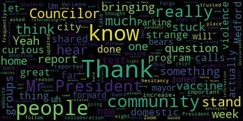

[Caraviello]: A1. 12th regular meeting of the Medford City Council. Mr. Clerk, please call the roll.
[Buckley]: Councilor Bears? Present. Councilor Falco? Present. Vice President Knight? Councilor Marx?
[Caraviello]: Present.
[Buckley]: Councilor Morell? Present. Councilor Scarpelli?
[Caraviello]: Present. President Caraviello? Present. 7th president, please rise.
[Buckley]: one nation under God, indivisible, with liberty and justice for all.
[Caraviello]: Pursuant to Governor Baker's March 12, 2020 order, suspending certain provisions of the Open Meeting Law, Chapter 38, Section 18, and the Governor's March 15, 2020 ordering Imposing strict limitations on the number of people that may gather in one place, this meeting of the Medford City Council will be conducted via remote participation to the greatest extent possible. Specific information and general guidelines for remote participation by members of the public and parties with a right or requirement to attend this meeting can be found on the City of Medford website at www.Medford.org. For this meeting, members of the public who wish to listen or watch the meeting may do so by accessing the meeting link herein. No in-person attendance of the public will be permitted, but every effort will be made to ensure that the public can adequately access the proceedings in real time via technological means. In the event that we are unable to do so, despite best efforts, we will post on the or community media website and audio or video recording transcript or other comprehensive record of the proceedings as soon as possible after the meeting. Okay. We have, Councilor Scarpelli.
[Scarpelli]: for the health director, just give us a brief update on the COVID plan.
[Caraviello]: On the motion by Councilor Scott Falco, seconded by Councilor Falco, 21202 under suspension. Mr. Clerk, please call the roll.
[Buckley]: Councilor Bears. Yes.
[Scarpelli]: Councilor Falco. Yes. Vice President Knight. Councilor Marks. Councilor Morell? Yes. Councilor Scarpelli?
[Bears]: Yes.
[Caraviello]: President Caraviello? Yes, I'm in favor of the motion, passes. Good evening, Marianne. If you can give us your weekly update, it would be greatly appreciated.
[0SdCkR9KuqQ_SPEAKER_06]: Sure, good evening, everybody. Nice to be here.
[Caraviello]: Marianne, hold on a second.
[0SdCkR9KuqQ_SPEAKER_06]: Oh, okay.
[Buckley]: She's listed it, she's showing us unmuted.
[Morell]: Can you hear me now?
[Caraviello]: We can't hear. We still can't hear. Give us one second.
[Scarpelli]: Pat?
[Morell]: Yeah. You can hear me? That's strange.
[Caraviello]: Yeah, we can't hear Marianne.
[Morell]: Can you hear me now? We can hear her on Zoom. That's strange that for whatever reason, it's only in one place.
[Caraviello]: Yeah, we had an issue earlier also.
[SPEAKER_18]: We can hear you. It looks like the they're trying to reset the council chamber audio.
[0SdCkR9KuqQ_SPEAKER_06]: It says I'm unmuted.
[SPEAKER_18]: So I'm happy to talk to you.
[Unidentified]: Nice to see you.
[SPEAKER_18]: You do area.
[Caraviello]: Can you hear me now? Congratulations.
[0SdCkR9KuqQ_SPEAKER_06]: Thank you. Thanks for having nice to be here. Good evening, everyone. So I just want to give you a little bit few updates. So, so far to date in March, we've had 264 cases. So while I know the state is reopening and we're relaxing a little bit people still obviously need to be vigilant. That's certainly not the surge we saw early in the winter, but it's still alive and well here in Medford. We need to be safe and follow the social distancing and the mask wearing. We've had 18 cases just in Sunday. Our highest week, we had 161 cases the week of March 7th to 13th. So we're still seeing the cases while we're still in the yellow As far as the state's concerned now positivity rate is looking good. We're not out of the woods yet. And I think everyone needs to be aware of that 264 cases this month so far today. So, good news is we completed the housing authority first dose vaccinations last Friday, so we completed all the housing authority units which is great. And the vaccination. information is on in weekly updated I mentioned that last week they're now putting out the vaccination reports by community on the state website, every Thursday evening. So they updated again last Thursday and as of last Thursday which wouldn't include all of our housing authority because we did one on Friday, 72% of a 75 plus. residents are vaccinated with at least one dose. So that's really good news. Out of the entire community, it looks like 26% has received at least their first dose, with 74% not yet, but we haven't hit the younger age groups yet. So what we're hoping to see is that reversed, right, by June or July. We're hoping to see 76% vaccinated and 24% not vaccinated. But as far as the 64 to 75 group too, we're seeing good numbers. 63% of that population has been vaccinated. And we're going to be posting all of this. We came up with some, I think, pretty nice ways to put this on the website. We're going to be using pie charts So it's easy to kind of see the percentages going to do it by age and by race and by race is really interesting and, and we're really working hard on outreach in the, in the, in the diverse groups because we're worried about vaccine hesitancy, we're not seeing the numbers we want to see in some of those. So this group so we are working hard on some outreach efforts. more to come on that. So, and again as you know this week we entered into phase four step one. So that increases gathering limits, the sports guidelines were just updated yesterday, youth and amateur sports guidelines. They've released or relaxed I should say the spectator guidance where it used to be just two parents and siblings were allowed. It's now 50% occupancy of whatever, whatever the indoor venue is now can have spectators, and the same with an outdoor venue with with a stated capacity limit will be 50% of whatever that is. But obviously, only if social distancing can be maintained. And I think. I think that's all I have. Is that anyone questions or thoughts?
[Caraviello]: Councilor Bailão.
[Falco]: Thank you, Mr. President. Thank you very much for the update. Appreciate it. Appreciate all the hard work put in by you and your department. Just got a couple of quick questions. You mentioned the new, I think, data or metrics that are gonna be on the website. Do you know when those will be on the city website?
[0SdCkR9KuqQ_SPEAKER_06]: Hopefully tomorrow. We just figured them out, got them in the easiest format, I think, for people to understand, because what the state has is just a bunch of numbers. I mean, the state data is not bad, if you want to look at it. It's a good report, but it's more the numbers and the percentages. We put it in a pie chart format, so it's easier to kind of see visually. So we're hoping that that's ready today. It should be on tomorrow.
[Falco]: OK, great. And I think that's one of the key points, is that it's put in a way where everyone or almost anyone can look at it and be able to visualize it and understand what it is. So I think that's great. And do you know when that data is there, is it through a certain week? Is that through like last week or through this week or?
[0SdCkR9KuqQ_SPEAKER_06]: Yeah, it follows the same guidelines as the case reporting data that the state does. So it's that Sunday to Saturday reporting, but they're doing this on a weekly basis. So I think the data up there now, I want to, I shouldn't even say, I think it's up as of the 16th, but I'm not quite sure. But yeah, it's a weekly data reporting on the vaccinations.
[Falco]: Thank you. And last week, I believe you mentioned the possibility of a regional vaccine clinic. Yes. Is there any update on that? Yes.
[0SdCkR9KuqQ_SPEAKER_06]: Yes. Thank you for reminding me. Absolutely. Yes. After I spoke to you The state did approve that regional clinic, which is great news. So Medford, along with eight other communities, will be hosting a regional site called the Metro North Regional. And we don't still have a firm date from the state. They're telling us potentially the earliest it would open would be April 5th. that we would have the doses to actually start distributing. But that one of the sites of the main site, one of the main sites would be the Gansher Center at Tufts University, which is wonderful. And what they do allow us to do as a regional and we still haven't got the details figured out. We're still looking at MOUs and trying to do those details. But the nice thing is that 25% of all doses can be put aside for our regional communities. So that's a nice thing. But you would access that site the same way you're going to access the new pre-registration site that the state's using. That's the same way you would access this site now. But if you do that pre registration process, what it does is it puts you tries to get you an appointment in the closest mass vaccination site to you. So it's not going to send you to Foxborough, when the next appointment opens, it's going to search for the closest appointment to you. So once this regional site opens, and we're in that pre registration process. people here in Medford, that'll be the site that they'll be that they'll be looking for an appointment for for you.
[Falco]: And as far as the you mentioned, the 25% is that 25% of the doses will go to Medford residents or is that regional communities?
[0SdCkR9KuqQ_SPEAKER_06]: It's regional, it's regional right now, but we haven't figured again, we haven't figured out the details. So would we all regionally say, subset of a community, like we're going to do 25% of everybody's 75 plus a or whatever, that those details again have not been, we just got the approval. So we're still trying to work out those details. But it's nice to have reserved doses for our area.
[Falco]: Yeah, absolutely. And as far as the two in a nutshell, who's responsible for like coordinating this and putting it together? Would this be you?
[0SdCkR9KuqQ_SPEAKER_06]: Good question. No, if this is being the we've partnered with Cambridge Health Alliance, so they will actually be the ordering facility and handling all of the billing and such. Again, when it comes to us trying to reserve at 25%. That may be put back on the communities that may be put back on us as far as privatizing those 25% for a separate clinic as opposed to everybody in the state, being able to register for the region. Does that make sense.
[Falco]: No, no, that makes sense it as far as the last questioning it. You mentioned I think, you know, working to, I think, trying to just looking at my scribble notes here. As far as I believe you said we need to do more work with reaching out to some of our more diverse community. Did you say you're going that we're beginning to do some outreach or comment more on that.
[0SdCkR9KuqQ_SPEAKER_06]: Yeah, we are we're definitely doing that we're putting together some. We're hoping to put together videos and pictures of people from diverse communities testimonials about getting their vaccine and maybe some of the hesitancy they may have had prior to but realizing it was a good thing to do. those would be coming out shortly. And we have been doing this outreach, we have the resource line and multi languages we have, you know, we can answer people's questions if they want to call. So we're hoping we're hoping to get more investment from those diverse communities into vaccinations.
[Falco]: Thank you very much. And one last final question. I just thought of this one. Right now is City Hall open? Is it? I know City Hall is open. But as far as the number of employees, is it restricted to 50% or something like that?
[0SdCkR9KuqQ_SPEAKER_06]: still at the 50% capacity.
[Falco]: Correct. Is that going to be changing anytime soon? Or is that if you could just have any on that?
[0SdCkR9KuqQ_SPEAKER_06]: It depends on what the state does. Yeah, I don't know when that would happen.
[Falco]: Okay, no problem. Thank you so much for your help. And now they can be a hard work to both you and to your department. Appreciate it.
[Morell]: Thank you, Mr. President. Thank you again, Marianne for being here again. week after week. I just have two questions Councilor Fargo actually asked a bunch of mine but going back to the groups which might have had vaccine hesitancy. Has there been collaboration with community groups I know other cities are doing that working with trusted community groups to be a conduit to get people to get vaccines.
[0SdCkR9KuqQ_SPEAKER_06]: Yeah, that's what we're working on right now. Yeah, and that's what we have been working off the last several weeks actually, and doing some outreach in those areas. So in West Bedford Community Center was a real good partner as far as trying to get us people registered for the vaccination clinics we were able to have, but we're still, yeah, we are definitely working with community groups.
[Morell]: Okay, great, thank you. That's what I thought. And then just other follow-up question is, the vaccine numbers. How frequently do we think that'll be updated on the website?
[0SdCkR9KuqQ_SPEAKER_06]: So hopefully every week, I think it comes out on Thursday nights with this on the state. So once now that we have this set up, it shouldn't be hard to just plug in the new numbers and have it updated the next day. Okay, great. That's all I have. Thank you.
[Caraviello]: Thank you. Any further questions? Um, Marianne, I just got one question for you. Um, you mentioned a number of the positive cases that we have. Do you have an age group or age range that those cases are in?
[0SdCkR9KuqQ_SPEAKER_06]: It varies, obviously, but it's it's trending to the younger younger ages, and we are seeing a lot of younger cases. About the senior school age and such. Not, not as much with the seniors, it's really trending younger. So both of the younger.
[Caraviello]: All right. Thank you. All right. Any further questions, Marianne. All right, motion to receive a place on file. Thank you, Marianne.
[0SdCkR9KuqQ_SPEAKER_06]: Welcome. Thanks for having me. Have a good night.
[Caraviello]: Councilor Scarpelli?
[Scarpelli]: While we're on this, Mr. Fadjen, can we look at number 21094, please? Resolution 21094.
[Caraviello]: We're already on suspension. 21094, Department of Ed dates from the police, fire, and DPW. I see we have Chief Buckley and Commissioner Kearns. Which one of you two gentlemen would like to go first?
[Buckley]: I unmuted first, so I'll go first. Thanks for having us. I love that view.
[Caraviello]: Mr. Kern, you got to get an office like that. Thank you, Chief. Thank you, Chief. We have the Chief Buckley on to give us a department update. Chief, would you like to give us an update?
[Buckley]: Yeah, so first question I have for you is I was able to, it was late this afternoon, but provide a document to the clerk. I don't know if he provided that to you. We did receive it. It's a big document. I know you probably don't have time to review it, but it's out there. It's the 2020 crime statistics report. I'm not quite we haven't done in the last few years. I'm not sure that you have seen a document like this in previous years. But this is an updated statistical report for everything that we've dealt with in 2020. But this document provides a statistical comparison analysis and provides you statistics from 2017, 18, and 19. So it gives you a kind of a four-year overview of sort of police operations and the criminal statistics that we would have in the police department. One of the advantages we have, I have Rob McIntyre on tonight. He's a crime analyst that we have. We hired him in 2019 and Rob has been tremendous for us to be able to provide not only to look at how we capture data, but to really project it onto chats and make it a lot more user-friendly and visible. And so you're the first to sort of receive this document and it will be released publicly starting tomorrow. It's somewhat good news. I think we trend as everyone else has across the country. Crime is, even though we took more crime reports this year, crime tends to be down across the country. I will tell you that And I don't know how far you want to get into this right now, but I want to take a moment to thank the officers in the Medford Police Department. There's one sort of like amazing statistic, and I'm going to give you just a few of them here. Just pulling it up here. One second here. Calls for service to the Medford Police Department. In 2017, the Medford Police Department responded to 23,136 calls. Come 2019, we were up to 36,000 plus calls. 2020, slight dip, pandemic, 34,153 calls for service. That's an increase of 12 to 13,000 calls for service per year for the last two years. And one of the, I seem to be somewhat surprising, but there are some related factors, but emergency calls, our 911 calls, 2017, 441 calls, 2018, 360 calls, 19 is 825 calls. 2020, we had 2,375 911 calls for emergency. So there is, there's a lot of, there's a lot being put upon the police department these days. We are in a national pandemic. And as I started my sentence earlier, I just wanted to thank the men and women of the police department because they are working in under sort of extraordinary conditions and doing a phenomenal job. And their workload is pretty much doubled in the last two years. So I can't pass up the opportunity to say, you know, thank you to all of the officers for the police department. And if you have questions related to, I know this is somewhat, but Rob McIntyre is also present. So if you have specific questions or statistical data on what can be gathered, I brought him here tonight to answer those questions. But I also have a detective Brooks Stanton Hurd. Detective Stanton Hurd is our new domestic violence officer. And over the last year to two years, we have put together a new domestic violence initiative. And a lot of it was really fast-tracked when COVID hit in March. And one of the things that we did in the city of Medford was to automatically go to an outreach for domestic violence through Detective Stanton and the Detective Bureau and the patrol division. They all kind of came together. We went out and reached out to our prior anyone who was listed on a prior domestic violence report to check in with them. You know, there's a lot of concerns of, you know, when people are quarantined, whether they're together or not. And so I think it's an extraordinary effort that was put together by the domestic violence unit in the Method Police Department. So I brought her here tonight in case there was specific questions related to that. And, but I, you know, overall as a chief, I'm happy to finally get this document out. It is the plan has always been a plan to kind of keep statistics out there. It'll get out on our website. I'm sure it will get out to the media and we want to be able to provide this sort of statistical facts to the city on a regular basis. And we now have the opportunity afforded the ability with our crime statistics. Any questions as it relates to that?
[Caraviello]: Councilor Marks, you were first, then Mike.
[Marks]: Thank you, Mr. President. And I want to thank my colleague, Councilor Scarpelli, for putting this on the agenda to get an update, starting with the police chief, the fire chief, and the commissioner of DPW, and moving on to other departments as well. I think it's always helpful to get information from our department heads especially the ones that we don't run into too often. Chief, this is the first thorough crime statistic report that I've seen in the last 20 years, and it's much appreciated. And, you know, I'm always looking as one member of the council, when I get emails and concerns from constituents regarding traffic controls, regarding speeding and regarding other issues of concern, such as crime and so forth in certain neighborhoods, this information would be most valuable to have to be able to report back to residents. So I appreciate that. And I think you did mention that it's on your website, is that correct, Chief?
[Buckley]: It will be. I'm hoping by tomorrow, it's beyond my technical capabilities, but I'm sure you're the first to really receive this. So it will be put out publicly and on the website, hopefully tomorrow, but by the end of the week, definitely.
[Marks]: That would be great. Thank you, Chief. And I too want to thank the brave men and women of the police department for all they do on behalf of our community in these trying times. It's not easy. to be a public safety official. And they've been doing tremendous work on behalf of keeping our residents safe as well as their personal property. And it doesn't go unrecognized. Chief, I had just a couple of basic questions that I was wondering if you can answer, not regarding crime statistics, but a general follow up from the meeting that we had, this council met on site on Fulton Spring Road back some several months ago. And I know along with the Traffic Commission and yourself, there's been much improvement made to that area regarding signage, regarding pedestrian crosswalks. And one thing that I think we still need to follow up, Chief, and I've had this discussion with you, was regarding resident-only access on Fels Ave, Fulton Spring Road, Murray Hill Road, Fels Ave Terrace, Grover Road, and that particular vicinity. I understand that some of the state roads lead into that road, and it may be difficult to put signs, but I think that's one missing component of creating an area. I think we promised residents that we were going to try to eliminate the cut through traffic the best way we could. And I think the resident only access may not be a solve all, but it'll definitely help. So that is my first question, chief. And I know you said you're going to review and look into it. I was wondering if you had the opportunity to do so.
[Buckley]: So we have started that review and we're probably a little bit behind on it, but we'll continue to do so. And I can get you an update on that through my traffic division. But we had talked, maybe it was a month ago, councilor, you know, there are some valid concerns up there. It's the state road access, and then it's obviously, if you close these streets off to residents only, where does the overflow go? Because we want to only, we don't want to only just concentrate on the area of the problem, but where we will create additional problems. So it's not an easy problem to solve and an easy task, and we've gone at it. and attack the problem a number of different ways up there with the street markets and the patrols. I think it has had some improvement. I have received some, you know, thank yous and notes of positivity as it relates to the traffic up there in the neighborhood. But I don't have a solution yet on those signs and we are still working on it, but I will be sure to keep you up to date on that.
[Marks]: That would be much appreciated. And let me tell you the response I got from residents so far Many residents are happy, and I'm sure Councilor Falco, who lives in the area can attest to it, are very happy with some of the progress that has been made to date. I just think we have to close the loop on some of the other major issues of traffic. That would be helpful. My other question, Chief, over the last year, I know there's probably been an uptick, at least from the calls I've received in the community, but because of COVID, the fact that people are home now 24-7, I think you see a lot of particular things escalating that may not have happened during other times, but because of COVID, I think it's escalating some of this within the community. And I get a fair amount of calls from residents that may have issues with a neighbor or someone a couple of doors down and don't know how to resolve an issue. And for whatever reason, they can't get together. And I think it's important, Chief, and I'm not sure if this is currently being done. I know I mentioned it to you before, having some type of community mediation. where the police can intervene on certain instances that may require them to get two parties together to somewhat come to a resolve, so it doesn't come to something other than a peaceful resolve. And that would be my intent. I was just wondering, Chief, is there any type of community mediation program that exists? If not, is that something you'd be interested in moving forward in this community?
[Buckley]: In a different way, we do community mediation, but we have to be careful about getting the police department involved in civil matters. So for example, if there's two neighbors who are arguing over tree or a fence, we wouldn't necessarily want to step in as a lawful authority, but the theory of mediation in the community, I think is a great idea. And I just think it would have to involve a lot of other different parties. And if we have to be a party or present at the table, I think that that is, absolutely something that we could do. You know, we do a lot of community outreach. We have our domestic violence teams and, you know, we have, we collaborate completely with all other organizations and, you know, from mental health organizations to domestic violence organizations to our hospitals and our EMT personnel. And we meet regularly to solve a lot of the problems. So, well, that is sort of sometimes you know, focused on specific clients, I don't imagine that something along those lines is impossible to do for the city. It's just, it's a tenuous thing. I would request that legal, you know, somebody of legal authority be there because a lot of what we see in neighbor disputes is civil and we have very little authority when it comes to it and we just have to be careful. But I guess if we're talking generalities in theory, I'm all on board with making a nicer, peaceful city, but I think we have to take sort of baby steps as we get there and how we handle this.
[Marks]: That's great. I think we're on the same page and I look forward to working with you to try to develop something in the community that we can use on a local level. And I appreciate the fact that, you know, there are certain items that we can't get involved in, but there are other items that I think we could successfully mediate, especially as the police department position of authority can help assist, maybe ease some of the tension that may exist in certain areas and among certain neighbors and so forth. So I think that would be a useful tool to implement. Chief, I have a lot of other questions I'm gonna reserve to our budget meetings, and it's regarding personnel and your maintenance and regarding your vehicles and so forth, and I will reserve that to when we meet for budget. I appreciate your time.
[Buckley]: Thank you, Councilor. I appreciate it. Councilor Morell.
[Morell]: Thank you, Mr. President. Yeah, thanks to the chief for being here tonight and the detectives as well. I do have a question based on, I didn't get the report you're referencing. I don't know if just hard copies were delivered so far. So apologies if this is in it. But I did have residents reaching out very much to your point of concerns of domestic violence increasing in light of the pandemic, people being stuck in living situations, being stuck at home. So I'm curious if there is data related to that calls as far as domestic violence and how that's been addressed, if that can be shared or to the extent that it can be shared.
[Buckley]: Well, so there's some information that we can share. Interestingly enough in 2020, and I you know, we're going March through till current into 2021 that COVID has been present. We really didn't see an uptick in domestic violence cases, but we have seen from 2019 to 2020 an increase in total. But I think the person who probably we could talk to, and I think has a lot to do with why our numbers are down, because we have such an outreach and involvement in partnerships with organizations is Detective Brooke Stanton-Heard. If Mr. President, if you would allow for her to speak on the matter just a little bit, she could probably go a little bit further into answering the question of the Councilor, would she see it as a primary domestic, excuse me, domestic violence officer?
[Caraviello]: Thank you. Detective Rastead. Hi, can you guys hear me?
[SPEAKER_14]: Yes. Hi, everybody. So we did address a little bit of that in the packet about domestic violence. Personally, it was a large concern of mine during the pandemic that people will be stuck at home, they're not going to be able to get the help that they usually would go into school or work and seeing people. So what we did is we created a domestic violence follow-up team. What we did with that is detectives like myself, my partner, my boss, and other patrol officers actually called any victims from the past year just to even just check in. I also created a domestic violence follow-up packet that is now being distributed to all domestic violence calls. Inside the packet, it has an example where it shows different ways they can get help, like telling the public about text 911, where you can real time text a dispatcher and the person you're with may not know. I also updated information on safe houses, other resources like Portal to Hope that we work with that will help them get resources if they're maybe not the most comfortable going to law enforcement, because unfortunately, sometimes people want help, but they don't want it to rise to the level of legal action. So we gave them various resources from getting help from us as well as through other communities around us. We also did see through doing this that we were able to get at least 10 definitive new reports that would have gone unreported otherwise if we didn't check in with them. But we also had a ton of other people who have recently moved from Medford who had new domestic violence incidents, and we were able to contact outside resources to make sure that they followed up with those individuals and got them the help they needed. So although we may not have all the numbers just for Medford, I know of at least 15 other incidents that I called and I had those departments reach out to them. And even if somebody didn't have a new crime or they didn't want to report a new crime, most of the people we spoke to said that they were willing to get these new packets and I mailed them to people, I emailed them to people, and now they're also being distributed. So that even if they're not open to getting help right now, they at least can have this in their back pocket for future or if they have a friend who needs help. I know we also did put some things out on social media about listening from home and calling 9-1-1 or texting 9-1-1 if you have concerns about a neighbor. So the response has been pretty good from the public, honestly. Aside from that, we also got some numbers of old people who were still in contact with abusers or quarantined at home with abusers. Just for in the future, if we get a call from them, we can know, okay, this person is not able to get help because they're quarantined at home with somebody who used to abuse them in the past. So I thought it was very useful. Moving forward, also, just to kind of wrap it up, I also created a high-risk assessment tool where officers or detectives, when they go to a domestic violence call, we can actually use 14 questions that are yes, no, and kind of assess how high on the scale for re-offense they may be. Or if there's someone who's been through us multiple times, we can see if behavior is escalating and address it more carefully so we can get them the resources they might need. And we're keeping all of those in-house. They're obviously not public information, but it helps us be able to understand our victims better and better serve them. Oh, and the last thing, I'm sorry, I also, we have a strangulation worksheet as well. So if there is a strangulation incident, we can better document it and have all of the injuries and have a better response for those kinds of very serious crimes.
[Morell]: Thank you for that information. I really appreciate it. And just for, you know, the department's attention to this specifically and work on this. And thanks for highlighting the text 911, because obviously, you know, if people are trapped at home, you know, or stuck at home, it's difficult to actually make those phone calls in a way that feel safe. So I'm curious how, how do people learn about the existence of that program? How is that pushed out? Just letting people I know it's kind of like a challenging thing to let people know about the texting program for text 911. Oops.
[SPEAKER_14]: Sorry, I think I unmuted myself. So every time I speak with somebody through domestic violence, when I do my follow up investigations, I inform them of it. But it's also a part of this packet. So when you're able to get a hard copy of it, it actually has a list of domestic violence resources. And the second one, aside from calling 911, I've listed text 911, which explains that it's an alternative to contact and also what I did is I created a packet for the officers who were doing these follow-up calls and I kind of had a script for them to read kind of an explanation for it if they even weren't familiar with it and I explained to them that it works outside of Medford as well and if for some reason they try to use text number one, it's not in an area that accepts it, it'll actually send a text message back so that they don't think that they're getting help when they're not. So I've been having officers explain that to people, I've been explaining it to people, and it's now on this packet that goes out to every domestic violence call so that even if people are just looking through it, it might be a useful tool that people can tell others about and try and get as much safe help without alerting the possible abuser they may be in the situation with.
[Morell]: Great, thank you so much. That's all I have. Thank you both.
[Buckley]: Thank you. And I know Detective Stanton explained it very clearly, but all our offices now are up to date in this and they carry this package. Even if it's a question of abuse or something along those lines, they hand those things out, the packets out so that there's a clear understanding to all parties involved in these cases. So we do get it out there as best we can.
[Caraviello]: Great, thank you. Councilor Scott, I apologize for taking you out of track.
[Scarpelli]: Sorry, Mr. President, you've lost my vote, but that's okay. First of all, Chief, thanks for coming tonight. I think that one of the biggest questions, what are we asking chiefs and department heads to come out for? And one of the discussions we talked about every time we meet, it's usually about budget and it's, you know, we need this, or can we give you this? But I think that it's important that we spent some time talking about what, you know, the information you gave us today, I had a brief opportunity to look through and it's pretty amazing what numbers can show you and how well our police department works with our community. And, you know, I know that, you know, you talk about so many of your officers doing so many things. I know Councilor Falco really pushed for the community meetings and hopefully they get started again. I know we have Officer Rory Rockowitz, works and method cares about prevention. Officer Rudolph we've had here to talk about 9-1-1 and any issues and concerns and that he put to rest and, you know, talking about Officer Hartnett and Officer Brooks and Sergeant is talking about probably the biggest phone calls we get the most dealing with traffic issues and concerns. It's great to see the Civil Rights Division now with Officer Purifuri having someone there in place and you really see and then, you know, one unbelievable addition and Officer Stanton Hurd and domestic violence and having her on board, I think that there's a common thread here that Method Police really do work well with our community and they hear what our needs are. And if there is something there, you're a chief that's willing to really work together with the community to make sure that if there is something that people need to talk about or that aren't being heard, you're ready to jump in and into action. So again, these are the reasons why that having these meetings, Council Member Mox had some great questions and you gave a great presentation. And I just want to thank you for that. I don't want to continue with the evening. I know some of the others have questions. I just, if I can, I do have one question for Officer Stanton Hurd. Can she tell us who her favorite high school softball coach was?
[Hurtubise]: Oh boy.
[SPEAKER_13]: I honestly knew that was coming. I knew it was coming, Mr. Scarpelli.
[Scarpelli]: Okay, are you just saying my name? Is it Coach Scarpelli?
[SPEAKER_13]: It's you, I promise it's you.
[Scarpelli]: Okay, thank you. Thank you, Chief.
[Buckley]: Councilor Scarpelli, I thank you. I probably could, you know, comment on everything you said, but I think you said it eloquently. And I just want to say that, you know, we understand that we faced a lot this year and there's, There's a lot being asked of the police department, and there's a lot that the police department have to be responsive and responsible to. And we are moving in this direction. I just openly say on behalf of all the officers, we're working hard. We just want to work with people to come up with solutions and resolve matters. So thank you. Thank you. Councilor Parker.
[Falco]: Thank you, Mr. President. And I'd like to thank my colleagues for asking some great questions. I thank Chief Buckley for his leadership. And also thank the woman and men of the Medford Police Department for all the hard work. I think especially over the past year with COVID, it's amazing. And I know the number of calls that I'm looking through this report, it's really amazing to look at the data, look at the increase. I know there's a slight dip this past year, but I think probably a lot of the calls were a lot more challenging as well. with COVID and it's, you know, it's amazing how, you know, you put your own safety and well-being on the line every day, you know, in a normal day, and then you put COVID into it as well. I know it's been a very challenging year, but I want to thank you for your leadership and all your hard work. And thank you for this report. This is really, I mean, I love to see data and this is great. You can look at this over the past three, four years, and you can really see the uptick in the number of calls and it's, you know, I haven't had a chance to really read it yet. I may have just received it when I came to the meeting, but I know I'll be reading it over and I'll definitely be giving you a call probably with more in-depth questions. I also wanted to thank Detective Stanton, especially this domestic violence piece in the back of the report. It's really good to take a look at this documentation to see what we're doing. And, you know, it helps answer a lot of questions that sometimes people might have. And, but Chief Buckley, if I may, really quick, and I know this is just because, like I said, I haven't had a chance to really digest this report yet, but when you look at this report, do you see, is there like a number one issue or number one concern or top one, two, three list of things that you would be concerned about or think need to be addressed?
[Buckley]: know, I think that's an interesting question. I think we're always concerned with the same thing. Our numbers are always going to be up on crimes of assault, crimes of theft and crimes of property damage. And, you know, we used to say in policing that, you know, you know, more police more reactive, you know, to this sort of thing. And I don't know that that necessarily is proven to have worked out there. But I do think that police officers being part of the community and educating the community brings crime down, right in a visible presence, not just standing there as police officers, but being absorbed into the community helps to address those issues. So those are sort of the things that we're working on. And I think it's finding when you collaborate with your partners in the community, whether it's not just the municipal partners like the schools and the DPW and the fire, but with your hospitals and your mental health and your substance use disorder agencies, that you really start to have an impact. And we have to find different ways of policing. And I think we're really doing a good job of that. And, you know, I know I'll get teased a little bit about this, but I don't know how many of you saw the WH, it's in the back of my report, but WHCH listed Medford as the fourth safest largest city in Massachusetts. And I'd like to tell you that I'm proud of that, but, which I am, but I think all the credit goes to the police officers here. You know, COVID was tough and, you know, you, you're out there publicly and you, when this first came out, you didn't, you know, It was scary. And our officers and others, the firefighters and the Method Police Department and their EMTs and the nurses and doctors, there was a lot of us that were out there in the public, but it was a tough job to do. And it was an experience that, you know, I hope we don't have to relive, but I can speak directly to the officers of this police department. They came to work. They weren't taking sick time. They weren't taking vacation time. They showed up. They responded to calls. I'm telling you, I don't have the statistical data to back this up, but I swear we were the busiest police department around. No doubt. I talked to other chiefs and our officers just really, they went above and beyond during the pandemic. And it was also during a time where, you know, we weren't exactly looked upon as, you know, man's best friend. And so, but they kind of, you know, they come to work and they do the job. And I think it's very altruistic. And I think it's very, you know, they signed up for this and they know it and they do their job and they do it well. So it gives me an opportunity to thank them again. And I probably don't get to do that too much publicly. And I just want to make sure that that was heard. But those few things you'll see are that I talked about, property crimes, assaults, and lastly, things that as police officers, you're looking out for, but they're interacting more with people now. And as COVID goes away, we're able to do that. And community meetings will help, and we can talk about these things. And once we have these community meetings, one of the things that I like is that the community starts to talk back to us and says, hey, chief, you know, there's people hanging here, and we're worried about this, and, you know, there's crimes that are occurring at this park, and we get more intelligence, and those all work. So, you know, as COVID, Quiet's down, I knock on wood because I don't like this plateau that we're going through. Maryann would kick me if I say this, but I want to be able to bring people back together and have these conversations as a community. But lastly, I just want to say one other thing. We thank a whole lot of people in the police department, but this crime report wouldn't have been done if it wasn't for Rob McIntyre, and he's on here tonight, and I know you probably don't have many questions for him because he's kind of that statistical, he calls himself a nerd, but I can't thank him enough. I can't do this. I mean, I can pull, they can give me data all day long, but to put it together and make it read well and look well in charts and documents, Rob has been an all-star for us in this. And so his presence and his work ethic allow us to be able to continue to give documents like this to the city. We're going to try to push these out more and more on a, you know, if we can do quarterly basis, we'll do that. And then we'll have the year end kind of response. I hope I answered your question, Councilor. I kind of went off a little.
[Falco]: Chief, that was very good. Thank you. I appreciate it. And thank you to Rob for the report. I deal with a lot of this type of work where I work during the day. And a lot of time, effort, and energy goes into stuff like this here. And you can tell. And the report, just by going through it, I mean, it tells a story and, you know, about the hard work that you in the department go through on a daily basis. So I just want to thank you for your leadership and your hard work. And like I said, I'm going to go through this more thoroughly and I'll be calling you with some additional questions, but thank you very much. Thank you.
[Bears]: Thank you, Mr. President. Thank you, chief. And I actually do have a question or two for Rob. So I hope he'll be, he'll be ready to answer them.
[Buckley]: And I want to answer these questions.
[Bears]: Good. So just jumping into the statistics, real quickly, and I'll get you unmuted, Rob. I haven't had a chance to look at the report. So I'm sorry if I'm asking questions that you actually answer in it. But, you know, that 2020 911 call number really stood out to me. It's such a huge increase. Do you break that down at all? Was a lot of that around medical emergencies, you know, people calling because of they were afraid they're sick with COVID or, you know, any other statistics on why the 911 calls jumped so much?
[SPEAKER_00]: I didn't really break it out as far as what the 911 calls. I mean, that's certainly something we can do if there's questions on it to determine what types of calls were involved there. Most of the information on that, part of it is our records management system. The 911 calls are better recorded, especially now that we're in the new building with a good system. We're really making sure we're keeping track of that. We've done a lot of work with the department since I came on in 2019 to really improve our record keeping. Every report that you see, all 1,660 that went through that were reported as actual crimes in this report, there's a number of other reports too that we took for the year. I read every single one of them. I checked them for, we use a coding system around that, and the FBI sends out a guidebook on the National Incident-Based Reporting System. I review that and then determine based off the call and the definition that they give which kind of bucket it fits into. But there's a lot of data points that go with that too because the FBI also tracks age of offenders, relationships, they track what property was taken, what type of property. If there was a relationship involved, what kind of location it is, date, time. The system we have does a lot of it. But what the FBI hasn't tracked, we've kind of implemented our own system. So next year, you should see numbers for what kind of outreach and referrals we did around that. We're doing a number on our, we added 13 questions at the end of 2019, beginning of 2020, which is why it's not included in the report. And it's 13 questions looking for if there's if there's domestic violence, if there's mental health issues, if there's substance abuse, if it involves someone who's elderly, if it involves children, things like that. So really my big focus is on getting the right data and trying to present it as best I can, so.
[Buckley]: Yeah. I'm sorry to interrupt. If I could just add, he's being slightly modest because a lot of this is, it's a lot of hard work and it's a lot of, you know, patients involved, but one of the things that we're changing around here, and a lot of it's thanks to Rob, is your data out is only good as data in. So we're trying to really change how we capture the data. As years go on, and the months go on, we're going to start really producing better documents than this. I hope one day someone looks back at this and says, ah, look what they've done since then. he's going to lead us into that direction and really work. I will add one last thing. And I am, you know, like I said, I was surprised that the 911 calls, but there's also another factor here that we're not sure how much it plays into, but 911 wireless calling services have also, the technology has increased and the E911 capabilities where before, if you dialed 911 on your phone, you would go to a state police directory and then it would be rerouted and come through different phones. Now we have the capability, wherever you are in Method, if you dial 9-1-1, you're getting them at the police department. And that absolutely has played to some of the uptick in those calls, and it should be noted. And I don't think we can really, right now, tell how much of an impact, but there certainly was, during the national pandemic, a very large uptick in that number of calls.
[Bears]: Thank you for that, Chief and Rob. And that makes sense to me, too. It just really stood out as a number, such a huge increase, even with the pandemic. And that takes me right into the next thing. I mean, we had some discussions last year around data and statistics, and I just think it's really encouraging the attitude that we're taking around having good data come in and good data come out and informing decisions. And my other thought was around that bigger bucket of calls. I think you said it was around 35,000 kind of, I don't know if it was calls or inputs. We also were talking about just how much we are asking police to do. you know, beyond criminal matters, and you even brought it up around mediation, right? It's like, well, we don't want to necessarily get involved in that because we have our role. And I was wondering, you know, as well, on that bigger number of calls, did you have a sense of how many of those maybe weren't about criminal matters, and you're getting called out to something that's not a crime, and you might have an issue even being able to deal with it, given your authority? That might be for you or Rob.
[Buckley]: Yeah, I'll answer it very briefly. We do not have a sense of that, right? And so that's a different sort of analysis of the actual police report, right? I don't know if you can just check a box this way, but it is something to think about, right? It's something to think about as for the future, but I'll actually really defer to Rob on this one and how much, because he looks at that data all day long.
[SPEAKER_00]: So if every one of the, It's tough to say exactly which ones are criminal and which ones are more civil in nature. We do have a classification for non-criminal codes that is considered a civil issue. You know, if the officer goes out and feels they need to document it. So we do have kind of a way to track that, but we're still working on efficacy to make sure that we're reporting that properly. So the big push this year was to get our crime stat figures focused and make sure that we were, the codes were right. We're getting the numbers to the state correctly. And there was a big push, especially the beginning of this year to make sure that all of that was done. Cause the FBI has a cutoff date in March for us to do our submission. And they'll still go through and audit it and look at all the crimes that we submitted. And you won't even see an official report out of the FBI until October, November, maybe.
[Buckley]: And Councilor, I'll add one last thing. All of our reports that are written, we now share in-house with our jail diversion clinician. We have the city social worker. We're working on a grant right now to try to bring in another social worker. to get them full time here to review all these cases, to sort of take some of that burden off of us, because it's not just sometimes the initial cost of follow up, right, and how that can be done in a different and if it belongs out of the law enforcement arena, we certainly want to get individuals who need help to the proper connections and the proper care. So we're building that whole program within the police department. And, you know, hopefully over the next year, you'll start to see a lot more of that showing, you know, but we do it now. And, and we, I fully believe in the success that we have.
[Bears]: So yeah, and you know, you kind of took the words right out of my mouth that, you know, thinking about now that you're able to track referrals and kind of track the different partnerships and have that good data coming in, you know, I might be speculation, but maybe one of the reasons you were doing so much this year is that we don't have enough people doing some of these other work and that work is falling onto you. So I think it could even help us inform budgeting, in a broader sense, how can we get more social workers? How can we make it so you're not writing grants all the time to get these essential positions filled? So thank you for that. And those are my questions and I really appreciate all your work.
[Caraviello]: Thank you. Thank you for coming this evening. and everyone's questions and you know, in your brief tenure as chief, policing has changed a thousand percent in the last couple of years. And I thank you for your leadership and I thank you for coming tonight.
[Buckley]: I thank you all and don't take this as offense, but I gotta get home. So I'm gonna log off and if there is, you can always reach out to me, but long day and I appreciate you having me here and enjoy the night. Thanks. Thank you. Thank you.
[SPEAKER_20]: Mr. Kearns, Commissioner Kearns. Good evening, Mr. President, Mr. Vice President. Thank you for coming this evening also.
[Caraviello]: Do you have a little brief update you want to provide before we take questions?
[SPEAKER_20]: Yeah, we start off with a C-click fix. As always, for citywide or departments, the bulk of it, it's fair to say, rests on DPW. It was massaged and relaunched by the mayor earlier this month. And, you know, my hat has to go off to Dyer, at least in the mayor's office, who gave, well, some of us a refresher, but some guys, quite honestly, the training where, you know, now all the department heads, highway, water and sewer, parks and so forth, Uh, you know, I have, uh, access to see click based on their departments and also systems upgrade for some of them with the computers that they had. So that way they can communicate with the different requests that come in from the public or whoever may be interested. Um, it's fair to say, okay, that, uh, you know, it's, it's working out very well on the DPW end. You know, I look at it as, quite honestly, a tickler file where things come in here in so many different directions. You know, we can go back in it with, you might say, the click of the mouse and, you know, see, you know, how many potholes were filled this month or, you know, how many, you know, complaints we have for illegal dumping this week. So from a management side, it's good. but also too, it also measures the progress as far as how much time does it take for us to not acknowledge requests, but to close it up. So anyway, I'd like to say it's working out very, very well, at least from the DPW end. I've talked to other department heads and they obviously don't get what we get, It's working out very well and quite honestly, you know, I'm happy with it. The next couple of things, okay, the DPW fleet maintenance has assumed the maintenance of the police fleet. All of the cruises marked and unmarked that are in the jurisdiction of Metro PD. I believe it's about 58 of them. But all of the maintenance now is being performed by PPW mechanics. And, you know, that's been working out well. You know, trying to familiarize ourselves, you might say, with the cars and, you know, continue to maintain them properly. Street sweeping, well, I think we've had 28 inches of snow and we'll leave it at that for this winter. Street sweeping is going to resume April 1st for the overnights on the arterials from midnight to 7am. The schedule has been posted on the website. The signs are up on the streets as far as the times and the dates that the particular street you park on is affected. but that'll resume on April 1st. The citywide sweep, we're leaning probably towards, maybe towards the middle of April. You know, we haven't, Steve and I haven't come up with an actual, you know, firm date yet, but again, we'll be doing the citywide sweep to, you know, pick up all of the debris that's been generated from, you know, the winter months. Okay, the last thing that I have and I'll throw out to any questions, the entire DPW staff, okay, so many per week are going through CPR and defib training to be certified in CPR and to also use the defibrillators. So probably within another week or two, you know, the entire staff will be certified. It was about a year ago at this time when I had finished up having everybody OSHA 30 certified. State law required us to be OSHA 10. I pushed the envelope and got everybody OSHA 30. And talk about timing, that's when all of a sudden the COVID broke out. So anyway, we're on the move. Obviously, we're out there every day. The water main breaks, potholes or whatever. And hopefully, you know, if the weather stays in our favor, we'll be getting out into the athletic fields very shortly. Right now, of course, the ground is out there.
[Scarpelli]: Thank you. Uh, Scott Billy. Uh, thank you, Mr. President again. Thank you, Council marks. Uh, I think this is what we're looking for. Um, Mr. Karen's, you know, we'll like again. We speak during budget times, but, um, it's mostly focused on what the needs are and how we can help or how we can't help. But I think it's important to hear what you just said. And I, you know, my questions I had were see quick fix and how the department was working. The other question I had was, you know, seasonal street sweeping. We talk about, you know, snow removal. We talk about, you know, in every season there's something. The preparation of the ball fields, that was another question I had. I'm glad to see that, is scheduled in place once the equipment can get on the field so our kids can get outside, especially at this time, you know, during the pandemic that they just want to get out and run and just have a good time. So again, I don't want to be related to the issue, but you appreciate what you're doing. I think that, I don't know if Stevie Tenaglia actually sleeps. I see him, at all hours of the day and night. He's driving around in a truck. Sometimes I think he's attached to that seat, so, because he's always working. And again, I think that, you know, yes, staff, whatever department it is, whether it's water, sewer, whether it's parks, whether it's highway, I think the DPW does an amazing job for the number of employees we have there. And, you know, it's what keeps our city going. You answered all my questions. I think that's important that we know what's happening and our residents know what's going on. And this isn't just a one-time meeting that we talk about, you know, the budget. So thank you.
[Caraviello]: Councilor Marks.
[Marks]: Thank you, Mr. President. I want to thank my colleague, Councilor Scarpelli for co-sponsoring this as well as members of the council. You know, Councilor Scarpelli hit the nail on the head regarding the amount of work that is produced from your department, Commissioner Kerins. It's remarkable with the minimum manning that you have in all levels from parks, highways, cemetery, water and sewer that you're able to produce and keep producing is a tribute to not only the workers, but your leadership skills. So I just want to, on behalf of the residents of this community, thank you for all you do. You know, when you think of first responders, immediately police and fire are the thought, but guess what? DPW workers, in my opinion, are first responders as well. And they've done a remarkable job over the past year during COVID to be out there and making sure that this community keeps moving forward. And indeed that has happened. You know, this was extremely informative and that's why Myself and council Scarpelli thought it'd be helpful to have these meetings every so often. I never realized that DPW now does the maintenance of the police vehicles. And that's a large undertaking. It was always for the most part subcontracted out for much of the repairs. And now I guess we're taking it in-house and that in itself is a large task and something that I didn't realize. So that was very helpful. I would like to ask you, Commissioner, regarding equipment needs, and I know some of this will be touched upon in the budget, and I'm not gonna get into budget issues until we start talking about the budget, but is there anything in particular that you could say to the council and to the residents on what particular equipment needs you may have in the upcoming months?
[SPEAKER_20]: Well, right now, of course, we're in the process of transition councilor as far as going from the winter to the summer. I mean, there are a few medium duty trucks that I've actually sidelined for age and deterioration that I'd be requesting for replacement for different departments. The parks department, you know, want to look at the feasibility of some additional grounds equipment. You know, Mike Nestor and I have been in discussion, you know, nothing concrete yet because we're researching what is out there that would be best suited for the job that we have. So there's different, you know, pieces out there that you might say a housekeeping, But in addition to that, now that PPW has assumed the responsibility of the maintenance, the upkeep of the cruises, I'm very, very well versed as far as cruiser maintenance. Back when, way back when, that was my first job, okay, was superintendent of a police fleet. I had 150 cars, a helicopter, 20 horses, and 30 motorcycles. I kind of have an idea as far as what abuse, you might say, and use they go through. That's going to be the area that we're going to really have to focus in on because some of these cars, though they run very good, they're getting tired. Tired as far as age, tired as far as mileage is concerned. All in all, and I will have to say the men and women of the department have taken very good care of the equipment, and in some cases, under the most adverse conditions. But like anything, it's a piece of machinery and it does wear out. So the chief and I will definitely be sitting down as far as coming up with what we both mutually agree and recommend as far as cruise is a concern. And I would also apply with Chief Berdy with the fire fleet, which we also maintain as far as what's out there because Everything has multiple drivers. Everybody has their own style of driving. In one minute, they're going 25, 30 miles an hour. The next minute, they get an emergency call. And well, all right, they pick it up a little bit. So they live a tough life. It's not a Medford issue. That's just the nature of the business. In my business, all right, Yes, it's multiple drivers, but it's also okay to stop and go with the wear and tear. And in most cases where my fleet, all right, is engaged in snow and ice control, all right, when these trucks have their blades on, they're taking a beating, they're taking a pounding. And again, machinery, it wears out. So, you know, we're gonna be sitting down and coming up with what we absolutely need before, you know, we'll sit with the mayor and put down what we really, really need, and then bring it to the council's attention.
[Marks]: Thank you for that thorough response. And I know this council, and I'll just speak for myself, has been very supportive over the years to see that DPW received the appropriate equipment, the appropriate staffing to fit the needs of not only a department, but to make sure they address the needs throughout the community. And I know that'll be something that this council is pushing for during the budget time. Just to touch upon what Councilor Scarpelli has brought up a dozen times, and I don't expect an answer now, but the creation of a sidewalk crew to do it in-house. I know Councilor Scarpelli has been on top of that for many years. And I think from a financial standpoint, it makes a lot of sense to have an in-house crew that we can depend on that sole purpose is to replace broken sidewalks throughout the community. So I just want to put a plug in for that. And the priority sidewalk for snow removal, it's something that we've talked about recently over the last couple of months. And I'm hoping that's something that we can look at by doing 40, 50, 60 miles of priority sidewalk throughout the community to connect bus stops and schools business districts for safe travel for residents. And I know that's something that you expressed interest on as well. And the last point is what Council Vice President Knight brought up, I believe it was last week or the week before, regarding road improvements. And I don't have to preach to you, Commissioner, but I think we all understand that our roads are in dire need of some attention. And it's great to throw some tire in a pothole, but I think many of the roads are past that and we have to look at resurfacing many of our major roads and thoroughfares throughout our community. And I hope not only within the capital plan, but also our budget that we put a higher emphasis on roads. So I want to thank you again for coming tonight and appreciate all your staff and what you do for us on a daily basis. Thank you councilor, my pleasure.
[Hurtubise]: Thank you councilor.
[Falco]: Thank you, Mr. President, and thank you, Commissioner Kearns. I want to thank you for all your hard work and for the hard working department as well. I know that there's been staffing challenges within DPW, but you always seem to get the work done. I agree with countless car belly I think Steve can actually lives in his truck, but every time I call him I he's working on something, and I know that the DPW is always working hard so I thank you for all hard work. I also wanted to. uh, basically ask you a quick question regarding, uh, you had mentioned the, and I, Councilor Marks touched upon it as well, as far as maintenance of the cruisers. So do you, um, do you know if, uh, or feel that we have enough mechanics on staff to handle the volume?
[SPEAKER_20]: Uh, for present, presently right now, uh, you know, we're, we're moving ahead. What I want to try to do is focus in on potentially looking at the feasibility of an additional mechanic. Because right now we have a mechanic when there's no fire trucks in for maintenance or repairs, he then works on BPW, he wears two hats. And I would like to look into getting another two hat mechanic, you might say, even though that mechanic would be a little bit more busier, particularly with 58 police cars, keeping them maintained because they require a lot of because, okay, the life of that officer is in our hands, all right? And I wanna make God being well sure, okay, that that car is running the best we possibly can get it.
[Falco]: Okay, thank you. And I missed what you said before. Did you say how many police vehicles?
[SPEAKER_20]: A combination of mocked and unmarked, Councilor, I believe it's 58. And unmarked cruisers. include, okay, the speed boards, their message boards, their Howie Davidsons, you know, that's also part of their inventory as well, but, you know, I'm just giving you the number of the rolling stock.
[Falco]: No problem, thank you. And when did you start, when did the DPW start maintaining the police car, police fleet?
[SPEAKER_20]: Earlier this month, Councilor, beginning of, you know, the beginning of March, okay. is when we started the maintenance of them. And basically it's been, okay, we get these guys in once a week, the whole fleet comes in and they go bumper to bumper, check the oil, tire pressure and everything else. And then call them in as the mileage or the hours, the running hours fall for regular maintenance.
[Falco]: Thank you. And last but not least, do you have any major concerns? What would be a major concern regarding the DPW that you think might be in the horizon or might need to be addressed?
[SPEAKER_20]: Keeping them healthy, Councilor. I will have to say that now that we're in the category of eligibility, yesterday I had two guys get their shots. Today I've got four getting their shots. I'm getting my shot at 8 o'clock tomorrow morning. So I'm starting to get a little peace of mind, but trying to keep these guys safe and healthy for their own sake. That's been a full-time job because to me, this pandemic, it's like shadow boxing. But I don't know what to do.
[Falco]: Very good point. Good luck with your shot tomorrow. And once again, thank you to you and your department for all your hard work. Appreciate it. Thank you. Thank you.
[Bears]: Thank you, Mr. President. Hi, Brian. Just want to say thank you again. I think you really are the poster child for when we ask people to do more with less, you always exceed expectations. And my biggest hope is that we can get you to do more with more, because I think we could just do so much for this community if we could get you some more resources. My only question, and I think Councilor Falco kind of got at it a little bit, is, you know, Do you have an idea of how much staffing, like what staffing level you would really like to see at the department to provide all of these services that we're talking about? You know, I know that the staffing level has gone down over the past several years, and I'm just wondering where would you like to see it come back to? You know, we're always asking about one position, maybe a mechanic, but is there kind of a broader number of how many people you'd like to see staffing DPW?
[SPEAKER_20]: Yes, there is. I've always said, give me 25 positions of my choosing. It'll be five for each of the parks, five for the highway, five for parks and so forth. All right, five for every pave, but okay, I would then go and establish, okay, a Monday through Saturday work schedule. So that way four of the days of the week, all right? I would have the extra muscle in each department to do either a special project, or you will say, like as Councilor Scappell said, sidewalks or whatever, but I'd have six day a week coverage. The city is growing, all right? And it's, you know, coming down to, you know, it's a seven day a week city, you know, and we have to change with the times, we should change with the times, all right, we want to stay in this business. And, you know, I've said, all right, you know, 25 sounds like a lot, but you break it up to the five departments only gives each man department five, but go six days a week, because, okay, the people are out there for six days a week, 12 months of the year, And it's plenty for these guys to do, because the majority of the personnel, they're all cross trained. Okay, so I mean, you know, all right, fine, all right, you know, we may not be lying in a baseball field in the wintertime, but flip side to it is they're capable of filling poppers. And I just throw that as a quick example. So there's plenty to be done out there and the 25 would be, you know, a good number.
[Bears]: Right, and I appreciate that. And I think, you know, it goes back to what you're saying, about keeping everyone healthy. Part of that is COVID, but part of that is not having Steve in the truck 60 hours a week, right? So, you know, I might be under counting it too, but thank you for that. And I think that's the kind of visioning we need to think about when we're talking about making sure that our departments have the services, you know, have the resources to provide the services that we need. So thank you, Brian.
[Caraviello]: Thank you, Councilor Bears. And again, Brian, I just want to thank you for coming tonight. Again, you know, today you have to do more with less and get better results from limited resources more than ever before. So again, thank you for your leadership. Thank you for coming tonight and see you soon. Okay, my prerogative is to be safe, Councilor. Thank you, Mr. Carrington. Thank you for coming this evening. Thank you. when Chief Gilberto comes back. So, thank you again. Motion to approve. Can we take 21-198?
[Falco]: Hold on, which one? 21-198. I don't know if Marie's on the call, but we'll put it up there anyways. 21-198 offered by the entire council, be it resolved.
[Caraviello]: that the Medford City Council congratulate Marie Cassidy on her 70th birthday. Later this week, one of our own community heroes celebrates a special birthday. Marie Cassidy, the lifeblood of the Medford Family Network, has worked tirelessly for almost five decades as a teacher, social worker, all around facilitating and giving love. Establishing relationships with families of young children, Marie has become an integral support person in many Medford households throughout her years of service. As one family said, you are one spectacular lady. You entered our lives when we needed you the most and introduced us to friends who became family, which is more than a sentiment that rings true with many. She is also in such honors as the 2018 Excellence in Public Service Award from the Medford Chamber of Commerce, Community Hero by the ABCD, and an honorary degree of public service from Tufts University. We celebrate Marie's everlasting impact on our city this year, and of course, her birthday, by raising a glass while donating your favorite feather bow. If you are looking to wish Marie a happy birthday, or just let her know you appreciate all she's done in your favor, join us on Friday, March 26th at 8.30 for a virtual celebration, and head over to the Friends of the Metro Family Network website for information. Thank you. Councilor Marks.
[Falco]: I will refer to Councilor Falco. Thank you. Is Maria here?
[Caraviello]: I don't know if Maria is on the call tonight. I don't see her here, but Councilor Falco.
[Falco]: No problem. Mr. President, thank you very much. I'd like to say happy birthday to Maria Cassidy. I've known Maria for almost about 20 years now. just through my work on the MFA Family Network and being on the advisory board for many years. And I remember meeting Marie some 20 years ago. I've never met someone with so much energy and enthusiasm in all my life. And she is someone that has had a tremendous positive impact on thousands of families here in our city through the years. She has been with the network since it's a beginning. when it started in multiple locations and I would say quartered at the high school. But like I said, she's had a positive impact on thousands of families throughout our community through the years. And she's a very special person. And she's always on the go. She's always moving around. I hope she finds some time to celebrate her birthday with her family and her friends. So I'd like to say to Marie Cassidy, happy birthday. And I hope she enjoys her day. Thank you.
[Marks]: Thank you, Mr. President, and I want to thank my colleagues for putting this on. You couldn't meet a kinder, gentler person. In all the years I've been in city government, Marie really stands out for her way that she handles situations, her intense knowledge of what she does, and her really caring and sensitive approach, how she deals with children and family in our community. And I just want to congratulate her, Mr. President. I do think there's a typo. It says five decades in here. It can't be five decades. Murray's not that old. I don't think it's five decades. But she does a tremendous job, Mr. President. And on behalf of this council, I just want to thank her for all she does for our community. Thank you.
[Caraviello]: Councilor Scott Bell.
[Scarpelli]: Thank you, Mr. President. As a young teacher, I remember this energetic, exciting teacher that would dress up and run around her classroom and excite her students and excite the school and get everybody going in such a positive way. And that was Marie Cassidy. I remember her as a young teacher and saw the impact that just a smile of being positive and being energetic meant to a whole school district, a whole school system. And what she's done is she's taken that knowledge and that love of children in a small classroom in one school, and she then turned our whole community around. If people talk about new and old Medford, one thing is constant. Marie Cassidy made everybody feel welcome. So there was no new, there was no old Medford. Marie Cassidy to bring everybody together, and that's what this city needs more and more every day, people like Marie Cassidy. She's been here a long time, five decades. I find that impossible myself. I think she's 21 and 21 and 20. She's 21 years old, and she just keeps going and going. And I think that her impact and her way of living is, I think, an unbelievable example of how everybody should live. Has anybody ever seen Marie Cassidy? not smile. I don't think I've ever seen that. You know, Marie's always there when family's in need. Who do you turn to, Marie? When you're new to the city and you need to find your way with different families, Marie's the person that's there for you. So she has been just an amazing person, and I probably know why she's not on this call, because Marie doesn't like, every time you see her, They feed her with the accolades. I think that's the only time you see her turn her head. So she's an amazing person, and I wish her a very happy birthday. And let's pray that she has five more decades with our community, just to move our next generations on in such a positive way. So thank you, Mr. President.
[Knight]: Mr. President, thank you very much. And to Marie, I know you're probably at home watching, embarrassed because of all these kind words that the council is saying about you. but every one of them is true. I always picture Marie Cassidy as a person that never has a bad day. Every time you see her, she's always smiling, full of energy, full of life. But most importantly, she's always focused on the end goal, focused on the mission, focused on the prize, which is furthering the Medford Family Network and its interests and objectives here in the community. And she's done a great job doing that, Mr. President, as evident by the number of awards that you so eloquently spoke of earlier in the evening. So with that being said, Mr. President, before Marie turns 71, I'd like to wish her a happy 70th birthday. So I join my council colleagues in extending these well wishes to her, and I wish her the best. Thank you. Council Member Rao.
[Morell]: Thank you, Mr. President. Yeah, this is really something that when you ask people what they love about Medford, no matter how long they've been here, I know the Medford Family Network comes up often, and it's something people are really proud of to have in this community. So I'm so thankful that Marie has dedicated so much of her 70 years to the city's families and all she's done for the community. So I join with everyone else in wishing her a happy birthday and really thanking her for what she's done for this community.
[Bears]: Thank you, Councilor. Councilor Best. Thank you, Mr. President. And I'd just be repeating what everyone else has said, but I think what Marie Cassidy has done for young people and families in this community for so long, can't even be valued, but I do hope that everyone will donate or try to support the virtual celebration. Of course, Marie is giving away her 70th birthday to provide donations to the Medford Family Network, which I think is exactly what we would expect of her. So please support that. It's on Friday, March 26, which I believe is this Friday at 8.30, and there are ways to give online. Thank you.
[Caraviello]: Thank you, Councilman. And if I could say, I've been working with Marie probably 15 years. It's a joy to work with her. I mean, anytime she calls me, I run up there because I can't do enough for her and her group. You've seen a lot of pictures with me and Marie over the years, and she may be small in size. She's very large in stature. And again, I just want to thank Marie all of what she does for the community, and she just continues to give and give. She is the ultimate energizer bunny up there. My Councilor tonight said, I don't think she's ever had a bad day. So again, I want to thank Marie for everything she's done for the community, and I hope she works here another 15 more years. Thank you.
[Scarpelli]: We'll place our file, Mr. President.
[Caraviello]: The motion by Councilor Scott Palacio to place our file, seconded by Councilor Falco. Mr. Clerk, please call the roll. to approve, right, sorry. Second by Councilor Belco.
[Buckley]: Councilor Bears. Yes. Councilor Belco. Yes. Vice President Knight. Councilor Marks. Yes. Councilor Morell. Yes. Councilor Scarpelli. Yes. President Caraviello.
[Caraviello]: Yes, affirmative motion passes. Councilor Scarpelli.
[Hurtubise]: for a cleaning and dining license by Joanne Campernoni.
[Caraviello]: 54 Nelk Road, Palmetto Rivera for Joanna's Laundry Service, LLC, 37 Boston Ave, at the mass. Refer this to uh, licensing chairman Councilor Scarpelli.
[Scarpelli]: Thank you, Mr. President. Is the petitioner here?
[Caraviello]: I see she was here. Let me see. She's here.
[Scarpelli]: Okay.
[Caraviello]: Hi, Joanne.
[Scarpelli]: Thank you. Thank you, Joanne, for joining us this evening. I've reviewed all your records. Everything seems in order. If you can, just if you can give us just before any councilors have any questions, we were on this. Can you give us a brief synopsis? I know this is a new dry cleaning, dying and dry cleaning location on Boston Ave, but could you give us a little brief insight?
[SPEAKER_10]: So it's not new. I took it over.
[Scarpelli]: Okay.
[SPEAKER_10]: So it was, I took it over. So it's been here for a while. There's been a bunch of owners. It's not dry cleaning service. It's just laundry service. So it's just wash, dry, fold, wash your sheets, dryers, drop off services, pickup services, pretty brief.
[Scarpelli]: Okay. No, that's a clarification. Wanted to make sure that, that everybody understands what it is. I see everything is in order, Joanne, and I know if anybody has any other questions, I move approval. Thank you.
[Hurtubise]: Any questions for Joanne?
[Knight]: Mr. President, I'd second the approval, Mr. President. I wish Ms. Campanoni the best of luck in her new endeavor, and hopefully things work out. But I certainly see no problem with this. It's an existing use. I think it's a wash vault now. Yes.
[Caraviello]: Thank you. On the motion by Councilor Scarpelli, seconded by Vice President Knight. Mr. Clerk, please call the roll. Councilor Bears. Yes.
[Buckley]: Councilor Falco. Yes. Vice President Knight. Yes. Councilor Marks. Yes. Yes.
[Hurtubise]: Councilor Scarpelli.
[Caraviello]: Yes. Yes, I'm in the affirmative. Motion passes. Mr. President, while you're under suspension. Councilor Scarpelli. 21194. be a result that the city council as a city administration and traffic department to look into parking concerns raised by residents who live on main streets with limited parking that are not on permitted streets in a who can only find safe parking on adjacent streets that have permitted parking so these residents can park safely without being penalized.
[Scarpelli]: Thank you, Mr. President. I know that received an email from a resident. And as I started looking into this and talking to different people, different departments, I think that this is one of the, um. One of the pieces when it comes to rules and regulations that, um, hurt hurt our residents and not being a permitted total permitted community, uh, people that are residing on major main thoroughways, main streets that share parking spots with businesses. And then, especially during the winter months with snow, finding it very difficult to park on main streets. And you're asking people that are working second shift or nurses and so on that might be coming home late, looking for a parking spot, can't find a spot on the main road. They're residents that are willing to pay for permit parking on the adjacent street. What I'm asking the city administration to do with the traffic department is to find a resolution that we can assist those neighbors that, you know, even if we said people that live on Salem Street that abut the side street of Park Street that have permitted parking, that we find a way that they are permitted to purchase a parking permit for that area or that one street so they have the ability to park in a safe manner. And the other piece is leaving those spots open for some local small businesses that really need that parking, especially as we get to a new normal here and open up our businesses. So again, this is a little issue that maybe is just bypassed because of the simple blanket rule of the permit or no permit, parking on the street. And this is for one resident that turned into about four more that I reached out to and I'm sure there are more that we're looking for a solution. And if city administration fabric the topic can help to find a solution to be greatly appreciated. Thank you.
[Caraviello]: Thank you. And I think we have somebody that wants to speak while we have the any other comments?
[Morell]: Mr. President? Thank you, Mr. President, and I thank Councilor Scarpelli for bringing this up. I do know that the Commission for Parking Policy and Enforcement, the zoned, idea of zoned parking permits is one of the things they explored and I believe will be in their report or is in their report to the mayor. So just sharing that that's something that has been looked in and hopefully the administration will receive that and think of some solutions. So I just wanted to add that.
[Caraviello]: Thank you. Thank you. I think we have somebody who wants to speak in regards to the streets. Name and address of the record.
[Galusi]: Is this the time that you want to hear it?
[Caraviello]: If Councilor Scarpe would want to amend his motion to add this on there. Okay. It seems we're on traffic.
[Galusi]: So in Q4 of 2020, you've all seen the house on the corner of Forest Street and Westfield Road that was blighted for many years. It's been being renovated, and after sinking all that money into the property, there was a day that city workers were installing a speed trap directly in front of the house. The owner asked them not to do it, and in so many words was told, too bad. I did reach out to Mr. Caraviello. He spoke with the traffic engineer. We were told that this was going to be addressed. It never got addressed. It is still sitting in front of this house, and it's directly in front of the door. And I actually have a... Somebody wants to take these. I have pictures for all of you that kind of show you exactly what's going on. This B-trap, you stand in the master bedroom of one of these units, and I actually didn't know about it being installed that day. I was upstairs in the master bedroom, and I see this flashing light. It's this B-trap in front of the house. When I went to the other unit, I'm standing in the living room, and you see this flashing light. That is not fair. If you guys all know Forest Street, he could have gone down a couple of houses. And you have houses that are set way back from the street. That speed trap could have been put there. It wouldn't have bothered anybody. He could have gone up a couple of blocks. It could have been installed in front of the houses that are up off of Forest Street. It wouldn't have bothered anybody. On the flip side of that paper that I just gave you is Highland Avenue. So 914 Highland Avenue, that buyer paid $800,000 for that house. And now the city of Medford has installed a crosswalk with a traffic light and another structure right there for you to press the button, not just in front of the property, but directly in front of the front door. Nine houses down, the same exact thing was installed. So you guys all know how the job there's a lot of places this stuff could have gone. I don't understand why we need to have a nine house away. I mean, we're all pretty healthy people here. But And to put it in front of somebody's front door is to encumber their residence, but also to devalue their property. I did try to take this up over the course of the last two days. Thank you, Mr. Mark, Mr. Caraviello. I would include you in those emails to numerous people in this city, because I don't know who to address it to. And the answer that I got from the traffic engineer today It was a beautiful email, but it didn't address the situation on why we're doing this for our residents. So I'm coming tonight to the council to ask for your assistance in resolving this, because it's totally changing the landscape of Medford. Thank you.
[Scarpelli]: Mr. President, I think Council Marks brought the same issue forward in the Governor Zav Lawrence Estates, Lawrence Road issue. And the traffic department moved quickly, I believe. to rectify the situation. I know that safety is paramount, and I can understand where they're coming from, but with what Ms. Catalo is talking about, it looks like these are put right in front of people's residence, and it does cause a bit of a concern where there wasn't much thought in maybe talking to the neighbors and maybe putting them more strategically location or at least not as flashy or interruptive to a bedroom or not. I'd like to amend this to maybe send this paper, this issue and concern to Todd Blake, our traffic engineer, to see if he can look into this and see if we can find some solutions maybe to move these locations to a more suitable area where it doesn't affect residents' front doors. I think it's very important. So thank you.
[Marks]: President. Thank you, Mr. President. I want to thank Councilor Scarpelli for putting this on, and I want to thank Kelly Catalo for bringing up this very important issue. Mr. President, we did receive a response back from the email that was sent out by Kelly from the traffic engineer, stating more or less that these particular sites are selected with due diligence and careful consideration for where they're being placed. However, if you look at the placement of these signs, I think that all goes out the window because I don't see that due diligence and careful placement of these signs. I see them plopped in front of front doors of people's homes. The thing is, Mr. President, with these signs, these are solar power signs. So we're not dependent upon having them in a certain area because of electricity. So these signs can be moved anywhere along the stretch. Naturally, you want to put them in an area that is conducive to slowing traffic down, making sure that people have the visual aspect to see the sign. So there are other arrangements why signs are put in certain locations that the traffic engineer is best suited to answer. But some of these, Mr. President, we're all very familiar with this area. I'm not sure why I couldn't go another 15 or 20 feet one way or another and not directly be in front of someone's home. And that's the one on Forest Street. And the one on Highland, I would say, even though it's very thickly settled over there, there's gotta be a better way of locating that sign rather than just putting it on the front door of someone's home. So I would ask to, I agree with Councilor Scapelli, and I would second that motion that this be sent to the traffic engineer for a second review of these locations, Mr. President.
[Caraviello]: To our traffic engineer, seconded by Vice President Knight, Mr. Clerk, please call the roll.
[Buckley]: Councilor Bears. Yes. Councilor Falco. Yes. Vice President Knight. Yes. Councilor Marks.
[Hurtubise]: Yes.
[Buckley]: Councilor Morell. Yes.
[Caraviello]: Councilor Scarpelli.
[Hurtubise]: Yes.
[Caraviello]: President Caraviello. Yes, second the affirmative motion. Motion to revert back to regular business. Seconded by Councilor Scarpelli, seconded by Councilor Marks. Mr. Clerk, please call the roll.
[Buckley]: Councilor Bears. Yes. Councilor. Yes.
[Hurtubise]: Yes.
[Caraviello]: Yes. Yes. Yes. Yes. So the motion passes. 21192 offered by the entire council being resolved the Medford City Council expressed a sincere condolences to the family of our city clerk Adam her to bees on the passing of his grandmother, Helen Winnie Mulligan. That's a problem.
[Falco]: Thank you, President. Adam, I know your grandmother meant the world to you, and I just want to express our condolences to you and your family. I know your grandmother, I believe she was 102, just about 102. 28 days away from 102. Just about 102. Okay, God bless her. I know she had the opportunity, I think, to visit Medford a number of times. She lived in New York, and she made the trek a number of times. And I know she told me she enjoyed her time here. And I know this is a tough time for you and your family, and my thoughts and prayers go to you and your family. Thank you. Thank you, Mr. Clark.
[Buckley]: All right. Councilor Scarpelli, thank you for putting this on. Been a rough week and I'm grateful for all your support and all your prayers and well wishes. I've conveyed them all to my family. We're overwhelmed with gratitude for all the support we've gotten from the city of Medford as well. Quick little story, my grandmother did things her way her whole life. And she was 28 days shy of 102 She woke up last Monday and she called her own shop. She said, I'm tired. I want to stay in bed. And she said a prayer and she left the building. And may we all be that lucky when it's our time. So thank you all very much.
[Caraviello]: If we could all rise for a moment of silence.
[Hurtubise]: Mr. Webb, please call the roll.
[Buckley]: Councilor Bears? Yes. Councilor Falco? Yes. Vice President Knight? Councilor Marks? Councilor Morell? Yes. Councilor Scarpelli?
[Hurtubise]: Yes. President Caraviello? Yes, that being the affirmative, motion passes.
[Caraviello]: On the motion by Vice President Knight to suspend the rules and take communication. Seconded by Councilor Belco. Mr. Clerk, please call the roll.
[Buckley]: Councilor Bears. Yes. Councilor Falco. Vice President Knight.
[Hurtubise]: Yes.
[Caraviello]: Yes. Yes. Yes, affirmative motion passes. 2-1-2-0-0. Mr. President, city councils, I respectfully request to recommend that the city council authorize a permit on the Massachusetts General Law Chapter 91, Section 10A, the Charles River Canoe and Kayak for the 2021 season. Sincerely, Mayor Brian O'Connor. We have Chief of Staff Rodriguez on the call. Mr. Rodriguez, would you like to give a brief synopsis of this? Okay, are we gonna unmute, Dave?
[Dave Rodrigues]: Good evening, Mr. President. Thank you very much. Yeah, this petition was placed upon at request of Paddle Boston as part of the regular operations that they do down on Mystic River, down by the shell. So we just put it on at their request. I believe somebody from Paddle Boston may be on the call, I'm not sure, but I'll defer to them as to the details of their programming and their operation moving forward.
[Scarpelli]: Thank you. Councilor Scott Belli.
[Knight]: I just reviewed chapter 91, section 10A, and it says that the permitting authority would be the Harbormaster, not the council. I don't recall previously approving this in the past when they were in.
[Caraviello]: I think we did a couple of years ago, but I don't think we have a Harbormaster anymore.
[Dave Rodrigues]: We don't currently have a Harbormaster, no.
[Caraviello]: I think I do recall this being brought up a couple of years ago. I don't know if it was brought up last year, but it has been brought up in the past.
[Knight]: So I mean, I just want to make sure we pass the smell test that we're doing it right, Mr. President. If the statute says we need to have the harbor masturbation permit, the harbor masturbation permit, not us. That's the only thing that I was concerned about.
[Falco]: Point of information. Is this the second time that they're applying?
[Caraviello]: Are these the same people that were here last year?
[Dave Rodrigues]: I believe it is, yes.
[Caraviello]: Yeah, they've been here a few years now.
[Falco]: I don't remember.
[Caraviello]: I do remember maybe two years ago approving it. I think 2019 is what I think I remember it coming before us.
[Marks]: Mr. President? Council Marks. If I could, just because I know time is of the essence with these particular companies, that if we approve this contingent upon whether or not the council has the statutory authority to approve it. And if we do, then fine. If not, they'll have to revisit. City administration will have to revisit it. Thank you.
[Scarpelli]: That's about it.
[Falco]: We're going to be hiring a Habermaster, David.
[Dave Rodrigues]: I mean, it existed before. They are tough to find. So they aren't so easy as just designating someone that they do are. There are certain requirements that are required for our master, including a captain's license and I believe a reserve, at least a reserve police academy. So the two, yeah, they're tough to find.
[Falco]: Okay, I mean, is the city required to have a harbor master? We have a river that cuts right through here. So I would think maybe we should have one. I don't know.
[Dave Rodrigues]: Is the administration exploring that option? We've spoken about it. We haven't actively explored adding a harbormaster or designating someone as of yet, but we have talked about it with the chief of police and kind of how that's gonna work. It hasn't been a subject of in-depth discussions, no.
[Knight]: Either way, I think that the council would need to issue a special permit on it, regardless of whether or not the harbormaster does, because it's a recreational use. It's a private entity. public consumption. So the council needs to issue a special permit on anyway. I just wanted to be sure that the Habermas, because all the appeals and the statutes say that the appeal of the Habermas decision to the state and the state makes a ruling on the Habermas decision. I certainly have no problem with, you know, the kayaks down there. I live in the neighborhood. It's not something that I utilize actually.
[Caraviello]: I think councilor Mark suggested that we could approve it and look into, have the solicitor look into continue on the solicitor, giving her a fool that seemed that we don't have a harbormaster.
[Bears]: Mr. President. Yeah, just I just wanted to add clarity that section 10 A says the harbormaster of a city or town or whomsoever is so empowered by the said city or town may authorize by permit. So it does allow another entity other than the harbormaster.
[Knight]: Point of information, Mr. President. Should legislative action have been enacted to appoint somebody other than the harbormaster to do it, where the city's had a harbormaster for, I can't tell you how many years. I don't think there's any legislative action that exists that would have been taken to authorize that authority to anybody else under the city ordinance.
[Scarpelli]: No, thank you. I think this is a discussion that I think that's needed, especially when you're talking about the city by the mystic. I think that my discussion is more with the chief of staff, and I know that Paddle Boston has been a great partner with neighboring communities. And there's often a partnership that you see with Paddle Boston, with different recreation departments that we look to enhance our waterways as we work in partnership with these these for profit organizations. So what I'm asked what I'd like to ask the chief is, is they just paying a permit fee or is there a partner fee? Is there something that we're in partnership with paddle bosses just kind of awesome looking for a permit to use our parking lot.
[Dave Rodrigues]: It's just a permit. There's no there's no agreement in place that would provide any ancillary benefit back to the town.
[Scarpelli]: It would be great. I think that this would be a great time to capture a need that we have in our community with an excellent organization of Paddle Boston. I know that different organizations like General Giant, Paddle Boston work with different communities. We look at our probably our most growing high school sport right now and activity when you're talking about waterways and rowing and our our dock that's at the Hormel site, and trying to work together. I'd like to see if there can be a partnership with Recreation Paddle Blossom City of Medford that we could set up some kind of a financial assistance where monies that are created could help enhance that docking system to help our residents of Medford. I know it's a great benefit and it's amazing for our community, but I think whenever we offer a permit for a for-profit organization to come into the community and ask for a permit, I think that in good faith, there might be some way that we can work together to try to capture some funding to help our own programs. And again, I know it's a business, but so are we. And a permit is, I'll support a permit tonight, but I think that if there's a good faith discussion with someone say from paddle Boston, that maybe they can work with our athletic director who works amazingly with different organizations to try to enhance what we have and using our waterways to for profit. I think that Just a permit just isn't enough for me. I'd like to see some, maybe some commitment that we're using these areas to not only provide a service, but it's also maybe to grow with it and maybe have another stop down the line closer to Hormel where, you know, they have maybe a few locations, but also use Paddle Boston to help our rowing program recreation program. Thank you.
[Caraviello]: Thank you. Any further discussion on this? I don't see anybody from pedal Boston. Are they, is it someone on the call here from pedal Boston? I don't see anybody on my screen unless.
[Hurtubise]: I don't see anyone.
[Caraviello]: There's nobody here from paddle Boston, but I can see someone seeing a different screen tonight.
[Scarpelli]: Okay, so then I'd make a motion. So make a motion that we work with the recreation department with the city administration to work with paddle Boston, and trying to find maybe a common partnership that would help support our rowing organization and Again, if they're going to use our- You want to amend the paper? I'd like to amend the paper. Again, if they're using our waterways and using our land for profit, there should be something more and it's just going to permit. So I'd appreciate that, you know, just something to enhance it, not to take it away, but to enhance it. So thank you.
[Caraviello]: Second. I have one question, Dave. It's amendment. Dave, I have one question and this is something I've had on the agenda for the past couple of years, in the area where they launched their kayaks and canoes, there's some trees that are in the water, sticking out, especially right by the shallow. That tree has fallen down, it's been there for about three years, and right up the turn, right by the Karate Bridge, there's some pretty serious logs sticking out there. If you could use your authority and reach out to the DCR, if they can clean up those those large logs that are there. So again, these paddlers and these canoes are very popular during the season. I'd hate to see someone hit one of them and get hurt. So if you can reach out to the DCI to get those trees out of there that are in the water, we'd greatly appreciate it. Yeah, that's easy. Yes, Mr. President. Okay, so on the motion by vice president.
[Knight]: Yes, I was just wondering what the term of the permit was in terms of from when to when?
[Caraviello]: Dave, the term of the permit?
[Dave Rodrigues]: Yeah, it was placed on for the 2021 season, which we, once the kayaking season is over, the permit would expire.
[Caraviello]: And what's the fee?
[Dave Rodrigues]: There was no fee established within the permit request.
[Knight]: So do soccer clubs have to get a fee to go to the park so they pay guys who run an operating game pool business with no permitting fee?
[Dave Rodrigues]: Well, there was no fee established under 10A. That's the only thing that we were looking at.
[Marks]: Mr. President.
[Knight]: That's not on land either, right? Councilor Marks.
[Marks]: I just wanted to also, if the record can reflect if there's any liability waiver form signed as well.
[Caraviello]: Okay. Any further discussion? So do we know when the kayaking season commences and concludes? Dave, do you know when the kayaking season starts?
[Dave Rodrigues]: I believe it's weather dependent. So I was relying on paddle boss and be able to provide these details. And they, I was told they will be on the call this evening, but I'll follow up with them and make sure that they can get these details over to you.
[Knight]: I don't know. I appreciate it. Yeah. In essence, we could be given them a nine month or a 10 month permit to operate, right. It's probably probably four or five months, six months. I don't know. It could be, but yeah. You know, we don't define the parameters.
[Knight]: If you can get us the perimeter of what the season is, then yeah.
[Caraviello]: Do you want to table it, Joe? I mean, I think they provide a benefit.
[Knight]: I personally, I think they provide a benefit to the community, the service they provide. I'd like to see a little bit back to the community based upon what they're earning. But at the same time, I know it's something that people love and it's something that I don't have a problem having in the community.
[Caraviello]: Okay, Joe, do we have a motion on the floor?
[Marks]: Motion of approval based on the contingency, Mr. President. that I raised earlier.
[Caraviello]: Yeah.
[Marks]: So if we're the statutory authority of approval, if not, the administration.
[Caraviello]: So on the motion by Council Marks, as amended by Councilor Scarpelli, as amended by person care of yellow, and as amended by Council Marks, seconded by second by Council Scarpelli, Mr. Clerk, please call the roll.
[Buckley]: Councilor Bears. Yes. Councilor Falco. Vice President Knight. Yes. Councilor Marks. Yes. Councilor Morell. Yes. Councilor Scarpelli.
[Caraviello]: Yes.
[Buckley]: President Caraviello.
[Caraviello]: Yes, seven affirmative motion pass. Motion to revert back to regular business. Second. By Councilor Scarpelli, seconded by Councilor Falco. Mr. Clerk, please call the roll.
[Buckley]: Councilor Bears. Yes. Councilor Falco. Yes. Vice President Knight. Councilor Marks? Yes. Councilor Morell? Yes. Councilor Scarpelli?
[Unidentified]: Yes.
[Buckley]: President Caraviello?
[Caraviello]: Yes, I'm in favor of the motion passes. 2-1-1-9-3 offered by Councilor Marks, be it resolved that the City of Medford's Ad Hoc Small Cell Committee upcoming hearing on March 31st at 6 p.m. to consider Verizon's 5G applications for the placement of small cell telecommunications rooms throughout the city be discussed. Councilor Marks?
[Marks]: Thank you, Mr. President. And I put this on the agenda tonight This has been close to a two-year process when we were first presented by Verizon applications to erect small cell towers within the community. I put this on first to raise public awareness. Secondly, to inform residents of the practice and the policy of the city of Medford regarding small cell placements and to address concerns that have been raised. I'm sure we all received them by residents of this community regarding the public health concerns from exposure to radio frequency, Mr. President. And I've read enough information on both sides that I've come to the conclusion I still can't figure out whether or not it is a health concern based on everything I read. But I think there's enough information there that would raise a red flag, Mr. President, and residents that may be in close proximity to these particular 44 sites that is the first round of applications by Verizon should be asking questions. So that's why I'm raising this tonight, Mr. President, not to take a stance one way or another. So the City of Method Ad Hoc Small Cell Committee will be having a hearing to consider Verizon's application for placement of a small cell telecommunication or 5G equipment on utility poles in the City of Method Wednesday, March 31st at 6 p.m. via Zoom. The ID number, if people are interested, is 933 7697-5064. So if you're able to get on Zoom, that is the ID that you plug in. And the passcode is 035999. There's also a call in number if you don't have the ability to get on the internet, you can dial in at 929-205-6099. And according to the memo that was sent out by the administration, if you're unable to attend the meeting and would like to express your thoughts about the application or the application process, please email 5Gcomments at medford-ma.gov. And they didn't put this, but I'm also gonna add, or if you don't have access, please call the mayor's office.
[Knight]: Just a point of clarification for the 5G, is that the digit five or the word five?
[Marks]: It is the digit five, thank you for that. The digit 5G comments. And you can also call the mayor's office to express your opinion. It's also important to know this advisory committee that was created by the previous administration. This ad hoc committee consists of Alicia Hunt, the Director of Office of Community Development, Tim McGiven, the Director of Engineering, Paul Mulkey, the Building Commissioner, and Mary Ann O'Connor, Board of Health Director. So they are the four department heads that sit on this ad hoc advisory committee. The interim policy was created by the previous administration based on the fact that the city did not have an ordinance to govern this. And the Verizon applications were before us. According to the FCC, there are time restrictions that a community has to act. And I believe at the time, it was thought that an interim policy was the best approach until the city creates a full blown ordinance that would govern the application process and the selection criteria and so forth of these 5G applications. So if I could, Mr. President, I would just ask that you indulge me for a little bit. There were some, I went through the 44 applications that are on the city website. I have several questions. The meeting is a week from tomorrow. which is the 31st, so residents that are interested really need to do their homework prior to the meeting. But the application process, the applicant is responsible for obtaining the abutters list within 300 feet of each poll location within the application. If you recall in 2019, I think many of the councils were here, we put out five recommendations regarding the mayor's interim policy that was created. One of the recommendations was to expand the 300 feet notification to 500 feet. That was voted, I believe, unanimously by the council back in 2019, October 29th, 2019, but it never made it into the mayor's interim policy. So as way of an amendment, I would just like to ask that this administration add that to the interim policy that we notify about us up to 500 feet. I think the additional notification will help ease concern in the neighborhood and concern of residents. We also voted, Mr. President, this was unanimous by the council, that an amendment requesting that the policy of no public hearings take place before 6 p.m. If we all recall, The first original hearing was going to be held at two o'clock and there was outrage throughout the community for people working and so forth. This was a time when prior to COVID and many residents said that's outrageous that you'd have a public meeting at two o'clock during the day when a lot of residents couldn't make it. So we asked that no meeting take place after six, no, before six. This meeting, I think, has called for six o'clock. However, the policy still does not state that no meeting take place or hearing prior to 6 p.m. And I would ask that be the second resolution, once again, asking this administration to address that within the interim policy. We ask that copies of the plans be available on the city website for each petition, and I'm proud to say that is currently happening, and that was a request of this city council, and that is currently happening. And we also offer the request that the abutments be expanded to 500 feet, and that correspondence come from the city, and not the utility company. The original letter that went out was directly from the utility company. And if members recall, there was a lot of information missing on that. The exact location and other information, contact information was missing on that. And that Mr. President was never added to the policy as well. And I would ask that as a third amendment that this correspondence moving forward from the city of Medford, which I hope that's the policy, but I think it is important enough to add into the interim policy. And the last one was offered by Councilor Scarpelli. He offered an amendment requiring contact information for utility companies on all notices. And as we know, the first notice that went out, there was zero contact information just stating that they're going to have a a small cell tower at a particular location, and that was never added to the policy. So I would ask that that be added as an additional amendment that requires contact information for the utility on all notices that go out from the city. So Mr. President, upon completion of the hearing, which is going to take place on the 31st, The ad hoc small cell committee may grant the application. They can grant it with conditions or deny the application based on inadequate capacity of the pole or mounting structure, safety concerns, reliability concerns, failure to meet... As well as the construction and placement of structures. that affect the installation of the primary use of the pole, residential concerns, and aesthetic considerations. So those are all the reasons that the small cell committee has to take into consideration, and I'm happy to see residential concerns are on the list. The city of Medford is particularly sensitive to the visual impacts of small cell wireless infrastructures, therefore it shall implement and impose on an interim basis, reasonable aesthetic standards pertaining to the size of the antenna, the equipment box, and or related cabling, placement of equipment on support structures, establishing flush mounting requirements and spacing requirements, and aesthetic measures such as paint matching or design matching for small wireless facilities in specific areas. camouflage and other concealment methods, and for residential areas, guidelines on structures, heights and lengths, and minimum setbacks, rules for dwellings, parks, playgrounds, or similar recreational areas. So I'm asking tonight, Mr. President, what are the minimum setback rules? The policy does not talk about minimum setback rules for dwellings, parks, playgrounds, or similar recreational areas. And I call that out, Mr. President, because part of the reporting that Verizon has to do, part of the reporting package, and it's voluminous, there's a lot of requests, is that when they select a location, there has to be criteria why they selected that pole. There's thousands of poles in the city, why did you select that pole? And the one I pulled up from George Street, like I said, there were 44 applicants on that for all different locations. The one I pulled up was the poll located at 50 George Street. And Verizon came out with this as their selection criteria. It says it's superior to other locations, given that it is set in a heavily trafficked area for the purpose to increase the bandwidth and cellular quality of Verizon network devices in the vicinity. The location itself is set in the public right of way. This location was not only chosen for its compliance with Verizon Wireless and National Grid requirements, but respect to the municipality's desire for co-locations on existing structures, and it is not directly adjacent to a park, school, or playground. I might be mistaken, Mr. President, but our requirement says proximity to residential dwellings, school, parks, or playgrounds. So they omitted residential dwellings. Why? Because many of these 44 poles, these new towers, are all within 20, 30 yards of bedrooms, dining rooms, kitchens, front yards, play areas next to homes, porches. So I'm curious, Mr. President, I would offer this as an amendment Why in the location selection criteria from Verizon, and I assume this is the case on all 44 applicants, but in particular for 50 George Street, why did they omit this as a chosen location and not include the proximity to residential dwellings? So that's another amendment I'd like to add, Mr. President. And that is missing from our criteria, which is in our interim policy. And that's an important criteria, Mr. President, because as I'll state a little further down, there are reports out there, and I have several of them in front of me, Mr. President, that talk about the potential exposure and the risk for pregnant women, children, elderly, individuals that may have implants, or cardiac concerns, Mr. President, or neurological problems. There may be concerns, Mr. President, with exposure. And the fact, Mr. President, that 5G, much of the information over the last 20 years, a robust body of independent science has emerged showing significant biological impacts from exposure to radio frequency microwave radiation. including clear evidence of cancer, neurological and cognitive harm, heart abnormalities, reproductive effects, and microwave sickness, Mr. President. All affecting the individuals that I spoke about. And human exposure guidelines for radio frequency microwave radiation used by the FCC are more than 20 years old and addressed only thermal, not biological impacts of exposure. So that also, Mr. President, is another concern that's out there. And I raise this, Mr. President, on behalf of residents that may feel that their voice doesn't count, may feel that they don't have input on this and it's a done deal. And I wanna raise awareness, Mr. President, where many of these small cell towers will be located, like I said, within 20, 30, 40 yards of homes, bedrooms, porches, and where our families congregate, Mr. President. And that's very concerning for me. These polls, Mr. President, they talk about cooling fans in residential areas. The small wireless facility operator permittee shall use a passive cooling system. In the event that a fan is needed, the small cell wireless facility operator, permittee, shall use cooling fans with low noise profiles. So we all know what that means, low noise profile. So they're saying, don't worry about the noise. Whatever we do is going to be permittable by whatever standards that are out there, Mr. President. But I can guarantee you, If you lived within 20, 30 yards of this, and you had your window open in July and August and June, that these low noise profile cooling fans may not be as low as you think. So also, it's a concern of a public nuisance, Mr. President, or I should say a potential concern of public nuisance. As I allude to the description and the location of these polls say that the community perspective, including visual aspects and proximity to residential dwellings, schools and parks shall be taken into consideration. And I hope when our four members get together, the department heads, that that truly is taken into consideration. Another aspect of this, Mr. President is The petitioner is required to present a written plan indicating the protocol for turning off wireless facilities when utility workers are present on poles in order to limit their exposure to radio frequency emissions. The plan should also include a description of any warning signs that will be posted to alert utility workers to radio frequency exposure. So this safeguards any utility workers that are going to happen to stumble upon this poll to alert them, hey, we have high radio frequency exposure on this poll. My concern, Mr. President, I put this in the form of a motion, as you know, The city of Medford now owns many of the streetlights, if not all of them, throughout the community. There's thousands of them, and there's reasons for our electrical department to be up. I know we subcontract the service, but there are reasons for our electrical department to be up around the radio frequency and get exposure, Mr. President. And what safeguards do we have, Mr. President, for our city employees for exposure? So that is in the form of a motion, Mr. President, to see what safeguards the city has on this, and not just what Verizon is doing for utility workers, but for our city workers. And then there should be a written plan indicating the response protocol to be implemented in the event that the equipment is damaged by weather-related event or due to an accident. So I think it shows you the serious nature of this equipment and the reason why there's protocol set up around it, Mr. President, which is a good thing. Then it goes on the interim policy to talk about prohibitions. And it says no small cell wireless installation shall be installed on poles that do not meet sidewalk clearance requirements and standards. This includes horizontal and vertical clearances for pedestrian passage. Applicable requirements and standards may include but are not limited to ADA, Americans with Disabilities Act. So my other motion, Mr. President, is that has this been reviewed by the city? So prior to having a hearing, is the city going out to these sites and making sure that it follows the prohibitions that are set forth for clearance requirements according to the city standards. If not, Mr. President, why are we wasting time notifying residents if this is not falling under the clearance standards that are already set forth by the city? We're sending out notification, we're alarming residents, and then at the hearing, if they turn around and say, sorry, this doesn't meet the city clearance requirements for sidewalks, then we've wasted everyone's time. And I think we should do our due diligence prior to that, Mr. President. And last but not least, and I appreciate my colleagues indulging me on this, but it is an important issue. It's been around two years. Now it's coming to a head. Verizon put us on notice. They threatened legal action against the city of Medford. So now we're on notice, and that's why the city is moving forward now. But the call that went out to the community was a good call. It notified residents. I am appreciative the administration did that. I assume letters going out to property owners within the 300 feet, we asked 500, but within the 300 feet about us we'll get more direct information. But Mr. President, I as one member of the council was eager to find out where these locations were. and the applications. So I went on the city website, and what popped up under the city website was a Google Map. And you know how difficult the Google Maps are, you got to take your fingers, and you pinch your finger and your thumb and you start expanding them. And these blue teardrops appeared. And if you expand too far, I was in Connecticut, and then I started going a little bit smaller. And I ended up in, you know, Revere and It was very difficult, to say the least, getting where these streets were. So I reached out to the city engineer, and he gave me a list of the streets, Mr. President. That should be on the city website, an actual listing of the streets. I would offer that in the form of a motion, Mr. President. The Google map is fine, but let's make it simple. Let's show residents what the streets are, where the polls are gonna be located, and it's easy access for someone to look up, Mr. President. It is important where this is eight days away. I would just like to read the streets off. It's not that long, Mr. President, but for those that may not have internet access and can't figure out or maybe 301 feet from the site and not receive the correspondence from the city notifying of this important topic, I think this is important. So the streets that, were pulled by the engineer and I thank him. 25 Dexter Street, the pole is located on Bow Street, where the installation's gonna go. 50 George Street, the pole is located on Wedgmere Road. 148 Washington Street, pole is located on Otis Street. 204 Winthrop Street, 13 Newburn Ave, 8 Alfred Street, 39 Albion Street, pole located on William Street. 287 Main Street, 25 Brooks Street, 72 Salem Street, all located on Oakland Street. 4 Central Ave, 499 Main Street, 20 Winchester Street, all located on Wareham Street. 200 Boston Ave, 21 Fairmount Street, 333 Main Street, all located on Bowdoin Street. 24 Wayham Street, 71 Central Ave, 4 Colby Street, 16 Mystic Ave, 42 Quincy Street, 600 Boston Ave, 13 Higgins Ave, 89 Princeton Street, 97 Greenleaf Ave, 13 Bradley Road, 62 Marion Street, 24 Tulsa Ave, 28 Killsett Road, 17 Court Street, 10 Winthrop Street, 87 Farmer Street, 236 Harvard Street, 90 North Street, 48 Granville Ave, 32 Brookings Street, 281 Boston Ave, 10 Cherry Street, 4 Brogan Road, 42 Martin Street, near 451 Boston Ave, 549 Main Street, 101 Chardon Ave, and 104 College Ave. I appreciate my colleagues for letting me announce that. Mr. President, from what I recall from a year and a half ago, Verizon had close to 90 applications at that time. They went forward and they submitted 44. I still believe Verizon, this is only about half of what they're going to offer. And if you look at the streets, you can almost tell it's about half the city. It doesn't include a lot of the other half of the city. So I think we can anticipate another 45 locations, Mr. President. And that's why it's so important that we get this process and this interim policy down pat to safeguard the residents of this community. So I want to thank my colleagues for indulging me. I know that was a long presentation, but I think it's important enough to make sure that this two year process, people don't feel left out. People feel like they have a say and people get involved on the march. 31st hearing, Mr. President.
[Knight]: Thank you. Councilor Marks, thank you very much for your very thorough presentation. Just in follow-up, we have nine amendments. The first amendment would be none of these hearings start before 6 p.m. The second amendment would be that the notification radius be expanded to 500 feet. The third amendment would be that the city handles issuance of the notice, not the applicant. Number four is that all notices do have the applicant's contact info on it. Number five is a question as to what the minimum setbacks are. Number six is what safeguards are in place to protect our city's employees from radio frequency exposure. Number seven is, has the ADA officer reviewed the proposed locations? Number eight is, can the city present a list of the poll locations on the city website? And number nine is, why are residential districts omitted from the review criteria on certain applications? Does that sound correct, councilor?
[Marks]: Excellent job, just one correction. And I'm amazed with just one correction. did excellent job. The setback from dwellings in particular dwellings, because they did allude to parks, schools and playgrounds, but they did nothing about dwellings. So just if you couldn't, I appreciate you putting that together. That was very thorough.
[Knight]: Excellent. Thank you very much. Council Max, the chair recognizes Councilor Scarpelli.
[Scarpelli]: Thank you. I will not try to even come close to talk about the 5g issue. Because Council Max, that is what a city councilor does what you just did right there. because I had phone calls saying, what's wrong with Councilor Marks? Why is he questioning 5G? It's just gonna happen. And what you just talked about right now are the other phone calls I got that, you know, Mr. So-and-so from Cherry Street that says, George, there's a 5G box going right across my daughter's bedroom window. And we're here for her future because there's still not enough information out there. And something simple as, why can't we just move it further down where it doesn't affect anybody's home? Where there's a poll that would work, not even a compromise. So whatever is being said in the public, the idea that the work that you just put into that and making sure that everybody has the answers is exactly what a city council does. And as a community member, and if that was going in front of my house, Councilmax, I appreciate your effort and your work. to make sure that everything that you put out is making sure that we're protecting our residents. So I thank you. I know that what we're hearing is it's a done deal. It's a federal law and they can do X, Y, and Z, but you bring up so many valid questions from so many residents that I think that this meeting has to be so important that Verizon has to at least listen and they have to at least look at some compromises. If we have homes that are 10 feet away from an eight-year-old's window, and that's a fear for that family, why shouldn't Verizon look at moving it down another 50 feet where it doesn't affect any homes, or it's the homes further setback, so there isn't an issue? So that's a thoroughness of what a true city council does. So I appreciate and applaud your hard work, and that's what we should all aspire to, what you just did tonight. So thank you very much for that.
[Caraviello]: Chair recognizes Council President Caraviello. Thank you, Councilman again, Councilor Scott, you did the work for all of us on that motion. I think I recall that the 40 was just the first submission of the day but I remember it was going to be somewhere, but 150 ish. because there was one submission, and then they were looking to do a second submission, a second hearing for a little bit over 100. So I think 40 is only the beginning, and I think we'll probably be doing this again for when they come up for their second round of putting them on the polls again.
[Knight]: The chair recognizes Councilor Bears.
[Bears]: Thank you, Council Vice President Knight. And I wanna thank Councilor Marks that we've been doing. After the thorough work on this and continue to throw work around five G for several years now. I just wanted to put a note in there that we could also move forward. In addition to recommending these changes to the policy move forward with codifying the small cell committee in an ordinance, and we could include some of the many items that I know that this hearing is happening on the 31st, but going forward, I think it would be good to have this all set in stone. Thank you.
[Knight]: I certainly agree with you, Councilor Bears, and when a council has legal representation, I think that's a great thing that we should start to pursue. Touche. Anybody else have any questions? Move the question. On approval of the question, motions to approve made by Councilor Caraviello, seconded by Councilor Scarpelli, as amended by Councilor Marks, nine times, as noted earlier in the meeting. Will the city clerk please call the roll.
[Buckley]: Councilor Paris. Yes. Councilor Falco. Yes. Vice President Knight. Yes. Sorry, I called you last, but now that I called you. Councilor Marks. Yes. Councilor Morell. Yes. Councilor Scarpelli.
[Hurtubise]: Yes.
[Knight]: President Caraviello.
[Hurtubise]: Yes.
[Knight]: Seven in the affirmative, zero in the negative. The paper passes. Council paper 21195 offered by President Caraviello. Be it so resolved, the Medford City Council receive a report on if there is a plan to reopen the Medford Senior Center in any capacity. Councilor Caraviello.
[Hurtubise]: Thank you, Mr. President. I don't think that a day goes by that I don't run into a senior
[Caraviello]: whether it's a school box, CVS, or somewhere asking me, Rick, when is the senior center going to open? I don't have an answer for them. And I know we're still in the COVID, as the governor starts to loosen the regulation up, and I know more and more seniors are being vaccinated, does the city have some kind of plan to open the senior center up? I mean, this is a facility that is, the lifeblood of the senior community. I mean, these people have been stuck in their houses for almost over a year now. I haven't been able to get out. And as I said, this building is where they go to socialize, where they go to get information, where they go to get help, where they go really for everything. Again, I'd like to know if there's a plan coming down the line in the near future As more and more seniors get vaccinated and the governor starts to loosen the capacity, is there a plan to open the senior center up? So that's my question to the administration. And if they could give us a report back, it'd be really appreciated.
[Knight]: Excellent. Is there anybody from the administration would like to chime in or would you like to file a report to the council? Seeing no hands, I think we'll take that as then we'll file a report with the council. Does any of the other councilors have anything to add? Councilor Marks, the chair recognizes Councilor Marks.
[Marks]: Thank you, Mr. President. I want to thank Council President Caraviello, because indeed, this is important and very important for many of the seniors in this community. And I know over the past year, we've been all preaching social distancing, social distancing, and it's very important that our seniors be able to communicate and meet with their friends and meet with other seniors and so forth. And that aspect of their life, Mr. President, for the most part has been missing over the past year. And it's vital more than ever now that we start to bring some normality in a safe manner to our seniors, Mr. President. And one thing that I know has been that resource is our senior center in the square. They offer a number of worthy trips for our seniors. Any given time, you used to see the buses leave behind here at City Hall. They'd be jam-packed with seniors throughout the community. You'd have the meat bingo that they'd have every year. They'd have a host of functions. They really did a lot for the seniors at that center. And I know a lot of seniors are sorely missing that. So I wanna thank Councilor Caraviello for recognizing that and whatever we can do as a community, if it's still a little too early, then so be it. But I think that has to be in the back of our mind that the interaction for seniors is very important. And in this time, I think it's important that we recognize that.
[Knight]: Thank you. Thank you, Councilor Marks, Chair recognizes Councilor Falco.
[Falco]: Thank you, Mr. President. I want to also thank President Caballero for bringing this forward. As we all know, the Senior Center is a vital part of our community, and it's always full of activity. So I thank you for bringing this forward. And I think it is important that we get some sort of a timeframe, you know, from the administration. If you were my consulate, President Caraviello, if we could amend the resolution just to see if there's a possibility with the warmer months coming, if there's not going to be any activity inside the senior center, is there a possibility of some sort of recreational activities that would happen outside? So if I could make that as an amendment to the resolution, I greatly appreciate it. you know, programming is key for the seniors. And if we're not gonna do something inside, there should be options outside, or we should at least be looking at those options. So if I could amend the resolution, I'd greatly appreciate it. Thank you, President Caraviello.
[Knight]: We've built that Bocce court for a reason. You know, when I think of some of the services and programming that come out of the senior center, one of the big ones is help with the tax preparation. This time of year is tax time. And we always had somebody down there helping out with the taxes. So with that being said, I'm on the motion made by Councilor Scarpelli, seconded by Councilor Marks as amended by Councilor Falco. And will the clerk please call the roll?
[Buckley]: Councilor Bears? Yes. Councilor Falco? Yes. Councilor Marks? Councilor Morell? Yes. Councilor Scarpelli? Yes. President Caraviello? Yes. Vice President Knight?
[Knight]: Yes. Seven in the affirmative, zero in the negative. The motion passes as amended. Paper 21196 offered by Councilor Bears. Be it so resolved by the Medford City Council that we stand in solidarity with the Asian-Americans in Medford and across the country in opposing the increase in anti-Asian bigotry, violence, and hate crimes that is being fueled by white supremacist groups and rhetoric. Councilor Bears.
[Bears]: Thank you, Mr. Vice President. know, I've had been reached out to by a lot of members of our Asian American Pacific Islander community this week expressing anger and frustration at what's going on in our country and asking for support right here at home. There's a report from the Anti-Defamation League of New England just last week, March 17th, that says we were at an all-time high for white supremacist propaganda since the ADL has been looking at that. and that it increased by 87% in 2020 alone. So I'm hoping that, you know, by taking statements and actions like this, we are directly pushing back on the dangerous rhetoric, and also letting residents know, in this case, Asian American, Pacific Islander residents, that they are welcome here in Medford, and that we don't tolerate that kind of behavior or rhetoric in our community, and I move approval.
[Knight]: I certainly couldn't agree with you more, Councilor Bears, on the motion.
[Unidentified]: Councilor.
[Knight]: Mr. President. I see you there, Councilor. Just a second emotion. Council of this seconded by Councilor Scarpelli. The chair recognizes Councilor Morell.
[Morell]: Thank you, uh, vice president night, Mr. President. Um so I think Councilor bears for bringing this forward. I also want to thank the mayor for putting out her statement last week. You know, uh, as, um, political leaders in the community as people at City Hall, our It's so important to speak out and condemn these acts and also just stand with our Asian American Pacific Islander neighbors as these incidences increase and the reported ones increase. So there's so much that doesn't go get reported. So I think it's really important that we take a stand, that we take a stand at these meetings and that we really let people in the community know where we stand. So I thank Councilor Bears for bringing this forward and I second the motion.
[SPEAKER_17]: Mr. President. The chair recognizes Councilor Falco.
[Falco]: Thank you, Mr. President. I also want to thank Councilor Bears for bringing this forward. This is a challenging time for Asian Americans and our Asian community. Numerous individuals have been subject to abuse, to attacks, and we need to engage our Asian community with compassion, empathy, kindness, and respect in response to these acts of intolerance and ignorance and hate. So I thank Councilor Bears for bringing this forward, and I also move approval. Thank you.
[Knight]: Excellent, just if I may from the chair, I'd like to take this opportunity to also recognize the work that Tufts University did recently with the elimination of the Confucius Institute. Institute funded by the Chinese government that has had a very spotty history. here at Tufts University and across the world. So with that being said, on the motion by Councilor Scarpelli, seconded, I'm sorry, on the motion by Councilor, oh, Councilor Caraviello, the Chair recognizes Councilor Caraviello.
[Caraviello]: Thank you, Mr. President. I want to thank Councilor Bears to bring this forward. I have a special bond with the Asian community over the years. My dad and his brother, his brothers in our business, sponsored dozens of Asian families to come to this country. with their families over the years. And so I have a little bond with them. And again, there is no room for any kind of aid on the agency. So I thank my fellow council for bringing this forward.
[Knight]: On the motion of Councilor Bears, seconded by Councilor Scarpelli as amended by Councilor Falco. Will the clerk please call the roll?
[Marks]: Mr. President.
[Knight]: Oh, I'm sorry, Councilor Marksley. Chair recognizes Councilor Marksley.
[Marks]: Thank you, Mr. President. I too want to thank Councilor Bears for offering this I think this council has been pretty vocal about having zero tolerance for any type of bigotry or hate crimes, Mr. President, not only in our community, but across the country. And I'm proud of our record speaking up, Mr. President, against this. And we know that this is a welcoming community, the city of Medford, and we will not tolerate any type of hate crimes or bigotry, Mr. President, we will stamp it out as a community.
[Knight]: Thank you. Thank you, Excellency. The chair recognizes Councilor Scarapelli.
[Scarpelli]: Again, to reiterate, I think that Councilor Morell said it perfectly that when we stand together, I think that it's a message that Santino DeMille, appreciate her message, but thanks Councilor Bears for bringing this forward and making sure that our community realizes that we have each other's backs. we support our Asian community. So thank you.
[Knight]: On the motion of Councilor Bears, seconded by Councilor Scarpelli, as amended by Councilor Falco. Chair, please call the roll. Mr. President. Councilor Morell.
[Morell]: I do see Mr. Castagnetti is waving his hand.
[Knight]: What he's doing?
[Unidentified]: I thought he was smoking a cigarette. He might be doing both.
[Knight]: There's something all right. Hello. There we go. He's back. He's in action. Mr. Castagnetti name and address for the record.
[Castagnetti]: Castagnetti Cushman street method, Massachusetts. Um, I like to agree strongly with Councilor Bears. He makes a good point. We all should be opposed to any kind of violence, violence against all sentient beings period. because as you can see what happened this year, violence begets more violence. We all need peace. Let there be peace. Thank you for listening.
[Knight]: Thank you, Mr. Castagetti. On the motion of Councilor Bears, seconded by Councilor Scarpelli, as amended by Councilor Falco, will the clerk please call the roll.
[Buckley]: Councilor Bears? Yes. Councilor Falco? Yes.
[Scarpelli]: Councilor Marks?
[Hurtubise]: Yes.
[Scarpelli]: Councilor Falco?
[Knight]: Yes. Yes. Did you have a couple of papers in the hands of the clerk. One more. Paper 21197 offered by Councilor Bears. Be it resolved the Medford City Council congratulate Finance Director Aleesha Nunley Benjamin and the city administration on winning the Distinguished Budget Presentation Award from the Government Finance Officers Association for the updated format of the city's FY 2021 budget. Councilor Bears.
[Bears]: Thank you, Mr. President. I'll keep it short and sweet. We may not all have agreed on what was in the budget, but we could definitely agree that it was easier to read. And I think it's wonderful that Director Nunley-Benjamin and the city administration have been recognized for that work. And I hope to see that continue in the future. Thank you.
[Knight]: Second, Mr. President. On the motion of Councilor Bears, seconded by Councilor Caraviello, will the clerk please call the roll?
[Buckley]: Councilor Bears? Yes. Councilor Falco? Yes. Councilor Marks?
[Unidentified]: Yes.
[Buckley]: Councilor Morell? Yes. Councilor Scarpelli? Yes. President Caraviello?
[Hurtubise]: Yes. Vice President Knight? Yes.
[Knight]: Motion by Councilor Scarpelli, seconded by Councilor Bears to take papers in the hands of the clerk. Clerk, please call the roll.
[Buckley]: Councilor Bears? Yes. Councilor Franco? Yes. Councilor Marks? Councilor Morell? Yes. Councilor Scarpelli? Yes. President Caraviello?
[Knight]: Vice-President Nightingale? Yes. Paper 21-204, be it offered by President Caraviello and Councilor Scarpelli. Be it so resolved, the Medford City Council send its deepest and sincerest condolences to the family of James McKinnon on his recent passing. President Caraviello.
[Caraviello]: Thank you, Mr. President. For those who may not know, World War II veteran, longtime football coach, teacher in this community, passed away a few months ago. No one really knew about it. And again, he's got a lot of families still living in the area. I know his daughters and his family. Just want to send them our condolences from the city for all his years of service to our community and to our school system. Thank you very much, Mr. President. Councilor Scarpelli.
[Scarpelli]: Thank you, Mr. President. Thank you, Councilor Caraviello, for bringing this forward. I know that I was planning on making a more detailed tribute to Mr. McKinnon. Mr. McKinnon, again, when we talk about legends, Mr. McKinnon was a legend for sure. He was bigger than life, a hero football player, a hero in this country, and a hero of a father and a husband. I know that His wife, Jean, and his children loved him dearly, and they made a huge impact in our community. I know Mr. McKinnon, as a freshman at Medford High, when you first walk into Medford High School, I think they left Mr. McKinnon right in the front door so he could set the tone. And I think that his tone was with his face, and he could scare you. I tell you that. He was someone that was very stern, but just a great educator. and a great leader at Medford High School and the city of Medford and other communities as well. But he will surely be missed and condolences to his family, the McKinnons, the Bradys. He's definitely leaving a void in this community. So thank you, Mr. President.
[Knight]: Chair recommends Councilor Felkel.
[Falco]: Thank you, Mr. President. I want to thank President Caraviello and Councilor Scarpelli for bringing this forward. I had Mr. McKinnon as a teacher in Medford High School, and he was very caring, very committed to our city, and thoughts and prayers go to his family. Thank you.
[Knight]: Chair recommends Councilor Bears.
[Bears]: I did not know Mr. McKinnon, but I do wish his family my sympathies and condolences.
[Knight]: Chair recognizes Councilor Marks.
[Marks]: Thank you, Mr. President. I want to thank Council President Caraviello for putting this on the agenda. You know, as Councilor Scarpelli mentioned, he was put at the front door for a reason. And I remember being up there. He was a very intimidating person. And you never gave him any back talk. You never looked at him out of the corner of your eye because you knew you were in for something if you could, if you did. But he was a great teacher and he really cared about the kids. And I think that showed and my condolences go out to the family as well.
[Knight]: Chair recognizes Mr. Castagnetti.
[Castagnetti]: Are you talking to me, Mr. President?
[Knight]: I believe you had your hand raised, sir.
[Castagnetti]: I was going to, I was, I wanted to say some condolence prayer for Adam, Mr. Adam Hurdybee and his family because he's always been a constant gentleman. But I think I coined a prayer last year with my friend Geshe-la Tenley at the Buddhist temple around two words, sentient beings. I think I like to say my prayer for all of mankind. Almighty God, creator of heaven, earth, and all sentient beings, and more. Please get me and all of us to be and do the best that we can, now, always, forever and ever, in our quest for eternal, blissful peace. Amen.
[Scarpelli]: Amen. Thank you very much, Mr. President. The chair recognizes Councilor Scott Felly. If we could dedicate this meeting in Mr. McKenna's name, I would really appreciate it, Mr. President.
[Knight]: as amended by Councilor Scarpelli, seconded by Councilor Caraviello. Paper 21204, be it resolved that the Medford City Council send its deepest and sincere condolences to the family of James McKinnon in his passing. Will the clerk please call the roll?
[Buckley]: Councilor Bears? Yes. Councilor Falco? Yes. Councilor Marks?
[Unidentified]: Yes.
[Buckley]: Councilor Morell?
[Unidentified]: Yes.
[Buckley]: Councilor Scarpelli? Yes.
[Hurtubise]: President Caraviello? Vice President Knight? Yes.
[Knight]: Please rise for a moment of silence. Paper 21-203 offered by President Caraviello. Be it resolved, the Medford City Council acknowledge March 21st, 2021 as being World Down Syndrome Day, a day dedicated to raising awareness about Down syndrome and celebrating individuals around the world living with a genetic condition. Councilor Caraviello.
[Hurtubise]: The number 21 signifies the 21st chromosome
[Caraviello]: which is significant with people with Down syndrome. As many of you know, I have a member of my family that has Down syndrome. And it's something that's very dear to me. And it's something I've supported for many years. And there's many parents that have children with Down syndrome. And over the years, Down syndrome has come, a monumentous way from when my family first had it. Back then when, you know, children were born, they were institutionalized. My mother-in-law chose never to do that to her son. And nowadays, children that have that are taught different. They lead productive lives now. They're taught different. And you can see how far this disease has come over the years. I just want to put something out to all the families in the community that have a Down syndrome child. It takes a special type of parents to raise these special children. And my heart goes out to all of them. And I just want to make sure that everybody in the community is aware of this disease and that we acknowledge it properly.
[Knight]: Thank you very much, Councilor Caraviello. On the motion by Councilor Caraviello, seconded by Councilor Scott Peller, the Chair recognizes Councilor Marks.
[Marks]: Thank you, Mr. President. I want to thank President Caraviello. Every year, he raises awareness for World Down Syndrome Day. And he does a magnificent job not just explaining what it is to have a family member with Down syndrome, but he also does a lot in the community, Mr. President, as someone that raises funds and raises awareness as well. And I appreciate the fact that you've been on top of this that we've been able to do. I think we've been consistent over the years. Thank you, and I really appreciate that.
[Knight]: Thank you. On the motion. Uh and the chair recognizes Chief of Staff David Rodriguez.
[Dave Rodrigues]: I have nothing further. The mayor did put out a brief statement on Facebook over the weekend just to celebrate
[Knight]: Excellent thing. I just saw your hand up there. I'm sorry if you weren't.
[Dave Rodrigues]: I may have hit it by mistake. That might be all on me. I apologize.
[Knight]: We'll learn it up here in the big seat. On the motion by Councilor Caraviello, seconded by Councilor Scarpelli, will the clerk please call the roll?
[Buckley]: Councilor Bears? Yes. Councilor Caput? Yes. Councilor Marks? Councilor Morell? Yes. Councilor Scarpelli? Yes. President Caraviello?
[Unidentified]: Yes.
[Buckley]: Vice President Knight? Yes.
[Knight]: Seven in the affirmative, zero in the negative. The motion passes.
[Caraviello]: Records. We'll pass the council at night. Two committee reports. Oh, sorry, we have two committee reports. Reports of committees. Committee of the whole. March 16th. This committee of the whole was to discuss the data breach and Chief of Staff said that the investigation is ongoing. Motion for approval. Motion by Councilor Knight, seconded by Councilor Scarpelli. Mr. Clerk, please call the roll.
[Buckley]: Councilor Bears. Yes. Councilor Falco. Yes. Vice President Knight. Councilor Marks. Yes. Councilor Morell. Yes.
[Caraviello]: Councilor Scarpelli.
[Hurtubise]: Yes.
[Caraviello]: President Caraviello. Yes. 7 in the affirmative, motion passes. 20568, March 18th, Committee of the Whole, report to follow. This was our ongoing zoning committee report with a trade Burboski and it is ongoing. Motion for approval. Motion approved by Councilor Scarpelli seconded by Councilor Falco. Mr. Clerk, please call the roll.
[Buckley]: Councilor Bears. Yes. Councilor Falco. Yes. Vice President night. Yes. Council marks. Council Morell. Yes. Councilor Scarpelli, President Caraviello.
[Caraviello]: Motion passes. Wickets. We'll pass the council tonight.
[Knight]: Gotten a report back from them in compliance with the ordinance. I think there was some housekeeping here before. One six.
[Caraviello]: 1-6-5-7-4, Tufts University accountability, spring 2017, next report due November 2021. Vice President Knight. Mr. President, thank you very much.
[Knight]: The report indicates that there are about 1,456 on-campus undergraduate residents in the city of Medford, 21 graduate students on campus in the city of Medford. Off-campus, we're looking at about 820 off-campus undergraduate students and 533 graduate students for a total of 1,353 off-campus undergraduate or graduate students. I've had the opportunity to review the report before it looks as though it's in order and I'd move for a receipt and place on file, Mr. President.
[Caraviello]: A motion by Councilor Knight, seconded by Councilor Scarpelli. Receipt and place on file. Mr. Clerk, please call the roll.
[Buckley]: Councilor Bears. Yes. Councilor Tocco. Vice President Knight? Yes. Councilor Marks? Yes. Councilor Morell? Yes. Councilor Scarpelli?
[Caraviello]: Yes.
[Buckley]: President Caraviello?
[Caraviello]: Yes. 7 in affirmative, motion passes. Records, we'll pass the Councilor Knight.
[Hurtubise]: Councilor Knight, how did you find those records?
[Caraviello]: The motion by Councilor Knight to accept the records, seconded by Councilor Scarpelli. Mr. Clerk, please call the roll.
[Buckley]: Councilor Bears? Yes. Councilor Falco? Yes. Vice President Knight? Councilor Marks? Yes. Councilor Morell? Yes. Councilor Scarpelli? Yes. President Caraviello?
[Caraviello]: Yes, seven in the affirmative, motion passes.
[Marks]: Mr. President. Councilor Marks. Before we call the motion, I just want to personally thank Kelly Catalo for coming up tonight and taking part in this very important process of city government. And I want to thank Kelly Catalo, a local realtor, and a tremendous advocate in this community.
[Caraviello]: Thank you, my friend and fellow Kiwanian, for coming out this evening. That's it. I have a motion to adjourn by Councilor Scott Falco, seconded by Vice President Knight. Mr. Clerk, please call the roll.
[Buckley]: Councilor Bears? Yes. Councilor Falco? Yes. Vice President Knight? Councilor Marks?
[Caraviello]: Yes.
[Buckley]: Councilor Morell? Yes. Councilor Scarpelli. Yes. President Kiaravaglia.
[Caraviello]: Yes. Seven in favor of the motion passes. Meeting adjourned.
|
total time: 19.95 minutes total words: 2868 |
total time: 19.02 minutes total words: 2968 |
total time: 6.68 minutes total words: 1252 |
total time: 3.7 minutes total words: 690  |
|
total time: 2.66 minutes total words: 529 |
total time: 9.92 minutes total words: 1809 |
total time: 42.08 minutes total words: 6037 |
total time: 11.1 minutes total words: 1847 |
{kind=link}
{kind=link}
{kind=link}
{kind=link}
{kind=link}
{kind=link}
{kind=link}
{kind=link}